United States Lottery Results
Here are the latest winning lottery numbers for United States : Thursday Feb 13th, 2025
| Game | Numbers | Next Draw | Jackpot | Tickets |
|---|---|---|---|---|
|
|
|
none
|
Buy | |
About the United States Lottery
INTRODUCTION:
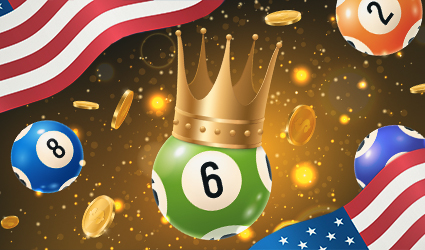For this page, we are going to break down the state lotteries for all fifty states.
Actually, we’re not. Did you know that not all states have lotteries? You probably did if you live in Alaska, Hawaii, Utah, Alabama and Nevada, which are the five states without a state lottery.
It’s no secret that the lotteries bring in a ton of money, just pull up any Annual Lottery report (assuming a state has a lottery) and look at the, “Transfers,” section. Of course, since I have been studying the lottery, I’ve been asking people about their reasons for playing.
The most interesting response that I got is that the person knows the house edge is bad, but they almost consider it something akin to a donation to the entities that the lottery benefits, in the case of her state, schools and senior care.
Of course, it might be more efficient just to make a direct donation to a particular school, or some center for senior care, but that doesn’t also come with the prospect of winning.
The majority of PowerBall and Mega Millions players, obviously, are playing due to the remote possibility of hitting an absurdly large jackpot such that they’ll never have to worry about money again.
Scratch off ticket players mostly seem to simply think that the games are fun and are often astounded when I tell them that the average scratch off ticket (also called Instant Ticket) returns less than 70%, so they have an expected loss of over $0.30 for every dollar spent.
Why do winners of small-capped prize drawing games (such as Pick 3 and Pick 4) play? I have no idea. I guess it’s mostly out of habit, but those are the sort of games that people should be able to recognize as mathematically terrible at a glance, and even if you hit the best prize, the house edge will actually catch up to you (unlike a billion dollar prize) if you keep buying tickets for every drawing.
Some people refer to the lottery as a, “Tax on the stupid,” which is objectively true, from the standpoint of house edge. Of course, if you’re the type of person who only buys a single ticket for the major drawings, then your expected loss is roughly the same as playing 100, or so, hands of video poker.
“You have to be in it to win it,” as they say, so the theory is that there is a certain time value and fantasy value into dreaming up all of the things you might do with those hundreds of millions of dollars if you do win.
Of course, the lottery is not without its addicted players. Addiction is unfortunate, but it seems that some people are predisposed to it, so virtually any form of gambling is going to come with its, “Problem gamblers.” You wouldn;t believe the number of people I’ve seen who buy $100 worth of Instant Tickets, scratch all of the barcodes and scan them without even really, “Playing the game,” by scratching the whole thing to determine whether they won or lost. Do they think that revealing the individual symbols is bad luck, or do they simply assume they are going to lose and just want to get it over with quickly?
How many lottery players are there in each state? Well, there’s no easy way to really know. What we can know is how much, in total, they are spending and how much they are losing on an annual basis.
With that, let’s get to some statistics:
METHODOLOGY:
The methodology for this study is going to be very simple: We will be looking at the 2019 Fiscal Year Annual Reports for every state with a lottery. The reason for this is that not all states have completed the 2020 Fiscal years yet (despite it being 2021) and using 2019 eliminates potential, “Covid Effects,” as much as possible without going all the way back to 2018 Fiscal Years.
When possible, we will try to separate Instant Ticket results from drawing ticket results, but not all lotteries list the prizes paid out for different lottery types as separate items. Almost all of them list the revenues from each game type as separate items, so that’s at least fortunate.
In fact, Maine is the only state that we could find that not only separates the general types of lottery games, but they also give the amount in sales and prizes paid out for each individual denomination (cost) of Instant Ticket, so that’s pretty neat.
Some states participate in Limited Video Lottery, such as West Virginia, basically these are just casino machines that are located in smaller establishments (bars, restaurants, parlors, coffee shops, etc) that are directly overseen by the lottery. The purpose of this study is to compare, “Traditional,” lottery types, which are inclusive to Drawing Tickets and Scratch-Off tickets, but we will include and note total lottery losses per resident for a few states with non-traditional games just to show how much money can be made on those. In those cases, revenues only accounting for traditional lottery types will also be shown separately.
Whether or not you wish to purchase lottery tickets after reading this is your choice, but hopefully, this study will give you an idea of the sort of odds that you are up against and the ridiculous profits that State Lottery Departments are pulling in.
Alabama
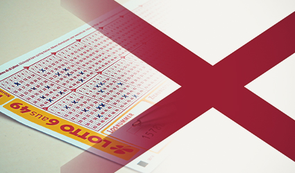As we mentioned in the introduction, Alabama is one of the only five of the United States not to have a state lottery, but that could be changing in the future.
The Alabama State Senate has already passed a bill creating the outlines for State Lottery guidelines and how all of that would be handled. The State Government could almost certainly use the money and are probably quite tired of seeing their citizens go to literally any bordering state to get Powerball and Mega Millions tickets when those jackpots get high enough.
Assuming that the state House agrees, then this matter of whether or not to introduce a lottery will eventually come up for public vote. Personally, I think it should have a pretty good chance of passing. If you don’t like the lottery, then you should vote yes and simply not play it. If people want to gamble in such a way that nearly half of everything that they bet goes to the State Government directly, then more power to them.
Alaska:
Alaska is another of the five states without a State Lottery. There is an entity called the, “Alaska Lottery,” but operates as a charitable entity that engages in the sale of raffle tickets state-wide. However, this entity is not operated by the State Government.
It’s tough to say whether or not Alaska would ever have a state lottery, and if it did, whether or not it would offer instant tickets. The problem with Instant Tickets is that the logistics of offering them might be more difficult in Alaska (given how far apart some towns are spread out and the terrain) than it would be for other states.
Alaska also has a population of fewer than 750,000 people, which means that there might be something of an artificial cap on how well a state lottery would even do. Another problem that they might have is that it, theoretically, take some amount of time before the lottery’s advantage begins to be realized on the games with massive jackpots. Powerball and Mega Millions being foolproof money makers basically counts on tons of people buying tickets.
Anyway, the entity called the, “Alaska Lottery,” does what would simply be a 50/50 raffle anywhere else. Therefore, the House Edge is 50%. Theoretically, a group of people could get together and just put all money into a pool with a very small amount needed for Administration and Drawing costs and just have a 95/5 raffle. Believe it or not, that would actually be LEGAL in many states as long as no individual was actually profiting on it (except for winning). Why? Because, in some states, it would qualify as social gambling.
Arizona:
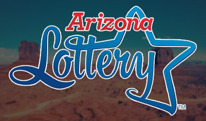Arizona is one of only some states to have a better 2020 than it did 2019. It should come as no surprise that some State Lotteries did not do as well, as a result of the Covid-19 pandemic. Essentially, the stricter a state’s lockdowns were, then the worse year that the lottery departments had...though there were even a few exceptions to that.
Casinos, on the other hand, pretty much universally did worse in 2020 (calendar year) than they did in 2019.
The reason that broad shutdowns negatively impacted the lottery is because, in some states, businesses such as restaurants (that sometimes sell lottery tickets, depending on state) were shutdown. Additionally, many “Instant Keno” games, which we are counting as drawing games for the purposes of this study, take place in bars. If the bars are shutdown, then Instant Keno is not being played.
As ever, it was a good year for the lottery, but not so much for the players. In terms of milestones, 2019 Fiscal Year was the first fiscal year for which the Arizona State Lottery exceeded one billion dollars worth of total lottery sales. From the report, we also find that the Arizona State Lottery must return at least 50% to players, overall, but as a practical matter, it usually ends up being more than that.
The chart shows a total prize expense of 65.6% of all of the lottery’s revenue, which actually makes this one of the better state lotteries, as you will be able to compare in the table that appears on the bottom of this page. There are a few reasons for this better than average overall return:
This higher than average overall return is almost certainly due to a high percentage of lottery revenues coming from the sale of instant tickets, which generally pay much better than drawing games. For example, the return-to-player for huge jackpot Mega Millions and Powerball, in most states, usually ends up being under 50%.
Furthermore, since returns to player MUST be at least 50% overall and the lottery knows that the mega jackpot games return less than that, they probably err on the side of caution in making sure that the returns (and sales) from the other lottery games will be enough to make up the percentage difference.
Total ticket sales were $1,076,621,414, which, as mentioned, is safely over a billion dollars in total sales. Total prizes were $706,491,066, so the total return to player, considering all games (because we have no other choice) was 65.62%.
Instant ticket sales were $750,278,323 and the lottery also has something called, “Instant tab,” that accounted for $9,913,074 in sales. In total, $760,191,397 in sales were some form of Instant Games, which leaves $316,430,017 in total drawing ticket game sales, of which roughly 214M were either Powerball or Mega Millions.
Total losses to the lottery were 1076621414-706491066 = $370,130,348, which based on an estimated population of 7.279M, result in lottery losses of about $50.85/resident.
As we can see, Instant Ticket sales accounted for just under 70% of all sales, which is much higher than the average lottery. Some State Lotteries actually see more (sometimes much more) in drawing ticket sales than they do in instant tickets.
Are the Instant Ticket returns-to-player great? Not at all. As we can see, the total paid out in prizes by the Arizona lottery (including drawing ticket prizes) is still less than the amount sold just in Instant Tickets.
As we will see, the average loss per resident is lower in Arizona than it is in most states, which is probably because there are a few population centers and the rest of the state is otherwise spread out. Arizona, at 33rd, has below average population density.
What you will find throughout this study is that, generally, states with more population density tend to do better when it comes to lottery losses on a per resident basis. The reason for that is because, quite simply, those states have a greater percentage of their residents conveniently located to a lottery retailer. Therefore, those who are inclined to play the lottery easily can.
Another aspect, which will come as a surprise to some people, is that median income tends to be a common thread. Contrary to popular belief, the main source of lottery revenues does NOT come from people who are in poverty throwing their money away. States with higher median incomes tend to have a greater lottery loss per resident, therefore, the obvious conclusion is that most lottery players are just people with a few extra bucks that they want to (usually) throw away.
Arizona ranked 27th for median annual income for the relevant time covered by this study, so once again, they were slightly below average in that regard. (Though not by much) These two factors, combined, contribute to the somewhat low average lottery loss per resident.
Another component worthy of note is the fact that Arizona was home to more than twenty Native American casinos during the relevant year, so quite simply, some people who might otherwise play the lottery prefer the better returns-to-player offered in the casinos and/or find the casinos to be a more entertaining form of gambling. While there is some crossover between casino gamblers and lottery players, people are still going to have limited budgets for gambling.
Arkansas:
While Arkansas isn’t the state with the most widely-available forms of gambling, they do conduct a state lottery. One thing that we have found is that states without Commercial Casinos (or very limited in location) and Native American Casinos (or few) often do better in lottery loss per player---all other things equal. I guess we will just have to see where Arkansas stands on the other common metrics.
Arkansas is quite spread out, coming in at 34th in population density, and relatively poor, clocking in at 48th in median annual income, beating only MIssissippi and West Virginia.
Fortunately, Arkansas is one state that separates instant and drawing tickets on both a sales and revenue basis, so we will be able to do a full comparison of those games on a return-to-player basis. Arkansas also participates in some multi-state lottery games such as Mega Millions, Powerball and Lucky for Life, which usually have lower returns to player than standard drawing games, such as Pick 3, not that Pick 3 is terribly good. (49.9%)
Total lottery ticket sales amounted to $515,493,507, of which $407,825,514 (79.11%) were Instant Ticket sales and the remaining $107,667,993 (20.89%) consisted of sales of various drawing tickets.
Prizes paid out to players were $293,695,992 for Instant Tickets, thereby resulting in a return to player of 72.02% for those game types which, as bad as that sounds, is actually surprisingly good by state lottery standards! $56,240,230 was paid out to players on drawing games, thereby resulting in a return to player of 52.23% on those---which is obviously terrible, but right about the average for state lotteries and not unexpected.
Totaling these up, $349,876,222 was paid out in prizes against $515,493,507 in total ticket sales for an overall return-to-player of 67.87%, considering all games.
Total losses amount to $165,617,285, which based on an estimated population of 3.018M result in a loss per resident of about $54.88/resident.
As we can see, they were right about where a state such as Arizona was in lottery loss pre resident. They compare similarly in population density, and though Arkansas is poorer, one factor that helps them a bit is that they do not have the casino availability that Arizona does.
That might cause a person to wonder, “Why did some states legalize Commercial Casinos?” The answer to that is pretty simple: The casinos make so much money that the State Governments can take a smaller percentage of that money and make significantly more than they make off of the huge chunk they get from lottery sales. The players get better games, casinos create more long-term employment and construction spending and the state gets more money.
In other words, even though traditional forms of lottery don’t do as well, the state does better overall. Even though players, on average, lose more money to casinos than they do the lottery, they perceive that they are getting a better game (because, percentage-wise, they are) and they also have more fun playing. In other words, your money lasts longer, but it gets churned through many more times over.
The Arkansas Lottery also lists drawing game prize returns by game type, so let’s take a look at what games are returning what percentage with this little table:
|
Game |
Sales |
Prizes |
Return Percentage |
|
Powerball |
34,162,016 |
16,302,877 |
47.72% |
|
Mega Millions |
33,552,661 |
16,059,601 |
47.86% |
|
Fast Play |
15,329,643 |
12,127,184 |
79.11% |
|
Natural State Jackpot |
9,303,843 |
4,957,513 |
53.28% |
|
Cash 3 |
7,677,433 |
3,415,250 |
44.48% |
|
Cash 4 |
4,430,761 |
1,745,300 |
39.39% |
|
Lucky for Life |
3,211,636 |
1,632,505 |
50.83% |
Fast Play sounds like it would be a drawing game, so I was shocked to see such a high percentage return for that one, but it’s actually an instant ticket game. We don’t know why it was listed along with drawing tickets in the report.
While the return-to-player is higher than this state, percentage-wise, compared to many others, that is due to the fact that such a high percentage of sales came from instant tickets.
California:
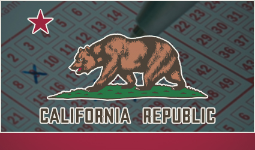California has a ton of the metrics that should lead to a high average loss per resident for the lottery compared to other states. They are 6th in Median Household Income and 11th in Population Density, so they rank highly on two of our key metrics.
One area that might detract from traditional lottery revenues is the fact that the State of California is home to, “Card Rooms,” which are authorized to offer poker and certain other Table Games. These are interesting because the house can charge a fee per hand to play, but the games just be, “Player-banked,” which means that a player has to act as the house for each hand in covering the bets on what would normally be house-banked games.
Of course, some entities/individuals found a way to make money off of this as there are players seated known as, “Corporations,” who are deeply bankrolled and will sit there acting as the house (and enjoying the benefits of the house edge being in their favor) while the players play the games. In the meantime, the card rooms can collect their fee.
With its rakes, poker tables in these card rooms operate as normal.
The State of California is also home to several Native American casinos, so as a result of that, California gamblers have no shortage of gambling options. We expect that the loss per player with traditional forms of lottery would be truly outrageous if not for these other options.
The first thing that the lottery reports, at least in terms of what is of interest to us, is the total amount in sales and prizes paid out for the Fiscal Year. Total sales amounted to 7,388,050,316 and total prizes were 4,715,592,673 which thereby results in a return to player of 63.83%, including all games. The total losses on all games were $2,672,457,643, which based on a population of an estimated 39.51M, results in losses of $67.64/resident.
The next section that is relevant to us separates sales and prizes into the general game types of drawing tickets and instant tickets, which the lottery report terms, “Scratchers.”
Drawing ticket sales totaled 1,526,370,543 with Instant Ticket Sales totaling 5,170,791,532 , Hot Spot Game totaling 313,779,077 and, “Daily Games,” totaling 377,109,164. Please note, that in the chart on the bottom of this page, that Instant Tickets will include only Scratchers will other games categorized as drawing games.
Scratcher Game prizes totaled 3,587,479,416 whereas Drawing Tickets are no longer separated by game type and total prizes are reported of 1,128,113,257.
When we add up the different types of drawing games from above, we get total Drawing Ticket game sales of 2,217,258,784.
|
Instant Ticket Sales |
Instant Ticket Prizes |
Instant Ticket Return to Player |
Drawing Ticket Sales |
Drawing Ticket Prizes |
Drawing Ticket Return to Player |
|
5,170,791,532 |
3,587,479,416 |
69.38% |
2,217,258,784 |
1,128,113,257 |
50.88% |
As we can see, overall returns to player for this state lottery were a bit poorer than those of other states, despite the fact that just under 70% of all sales were instant tickets. Drawing ticket returns might seem to be a little better than average, but California once had a law that the lottery should return as close as practical to 50% to the players, so in-state drawing games might have been designed to return just a little bit over to play it safe.
Another thing to consider is that California represents a massive sample size, at least, when you compare it to other states. In other words, a top prize winner on one lottery game or another isn’t really going to change the average return too much. Even an extra ten million dollar jackpot paid out would look like a rounding error.
Contrary to what might be popular belief, those with an income of under $30,000 are less likely to play the lottery, of course, they probably shouldn’t be playing it at all and should definitely not account for any meaningful percentage of lottery players, though they do. In terms of lottery sales, those with an income between $30,001-$50,000 account for lottery sales directly relative to their percentage of the population. Those with an income of $50,000, or more, play the lottery at slightly higher rates than those of other income levels.
The best sample size you’re going to get, anyway. If you are an American citizen, then there is almost a 1 in 8 chance that you live in California...and that does even include the Californians who only, ‘Legally,’ live in Nevada in order to duck California’s state income tax.
Colorado:
 Colorado is another state that specifically mandates that at least 50% of all lottery purchases be returned to players in the form of prizes. As a practical matter, I don’t know how much worse than that a lottery could get and still have players who choose to buy the tickets!
Colorado is another state that specifically mandates that at least 50% of all lottery purchases be returned to players in the form of prizes. As a practical matter, I don’t know how much worse than that a lottery could get and still have players who choose to buy the tickets!
But, I bet if there were a Pick 4 game that only paid $1,000 if you matched the numbers straight, and had no other prizes, there would still be a few people willing to buy their daily chance.
The 2019 Annual Lottery Report.
The citation on the 50% law:
As can be found in the report here:
Colorado Revised Statutes (C.R.S.) Section 44-40-111(9), requires that no less than 50% of the total revenue from sales of lottery tickets be for prizes. The legislation also provides guidelines for distribution of net proceeds to beneficiary agencies. Article XXVII of the Colorado Constitution states that “net lottery proceeds” (that is, proceeds after the payment of prizes and lottery expenses and a reserve for future operations) are to be distributed to the Conservation Trust Fund within the Department of Local Affairs, the Division of Parks and Wildlife within the Department of Natural Resources, and the Great Outdoors Colorado Trust Fund (GOCO). The amount distributed to GOCO is limited by a constitutional cap, which was calculated to be $68.5 million for the year ended June 30, 2019.
Here are the returns:
|
Game Type |
Sales |
Prizes |
Return to Player |
|
Instant Tickets |
443,409,967 |
299,240,160 |
67.49% |
|
Powerball |
86,147,274 |
40,950,837 |
47.54% |
|
Lotto |
28,034,842 |
14,529,352 |
51.83% |
|
Mega Millions |
72,719,920 |
34,900,730 |
47.99% |
|
Cash 5 |
16,571,656 |
9,159,621 |
55.27% |
|
Cash 5 EZ Match |
3,041,876 |
1,777,359 |
58.43% |
|
Pick 3 |
12,902,998 |
6,209,327 |
48.12% |
|
Lucky for Life |
16,951,078 |
10,171,758 |
60.01% |
|
Total |
679,779,611 |
416,939,144 |
61.33% |
California is also one of the only states with a $50 Instant Ticket, as most states only go up to $30, or less, on those. Can you imagine someone buying one of those and just scratching/scanning the barcode without even bothering to look at the game? There are probably several people like that.
In total, Drawing Tickets accounted for $236,369,644 in sales and $117,698,984 in prizes, thereby resulting in a return-to-player of 49.79% on those. That’s worse than most state lotteries, but is easily explained by how high of a percentage these drawing tickets are of the game types Powerball and Mega Millions.
Of course, without instant tickets, the Colorado Lottery would actually be violating the law on a minimum return of no less than 50%, so that’s pretty awful!
In total, residents lost $262,840,467 to the Colorado State Lottery, so based on an estimated population of 5.759M, the loss per resident to the lottery was $45.64.
The good news is that overall return to player goes up to over 61% given that some 63-64% of all tickets sold are instant tickets. The returns would actually be worse, but Lucky for Life players did better on the game in Colorado as compared to many other states.
In terms of the low average loss per resident, Colorado trends younger, so those folks are less likely to play. And, while they are 11th in Median Household Income, they are in the high-30’s in population density, so many of the state’s denizens are relatively spread out and some even find themselves basically stranded during the Winter months.
Furthermore, Colorado has legalized Commercial Casinos in the state, so those are essentially competing with the State Lottery (and winning) for the limited number of dollars in the gambling budget of the state’s residents.
Connecticut:
Fourth in population density and sixth in Median Income per Household, we would expect that Connecticut would be a better than average state for lottery loss per resident. Additionally, the state itself is home to only two casinos, Foxwoods and Mohegan Sun, which are located near each other up in a far corner of the state.
In many parts of the state, the Lottery doesn’t have much in the way of other gambling to compete with, so we expect the stars to line up well for traditional forms of lottery here. Let’s check out the Annual Report for 2019,
The Connecticut State Lottery separates ticket types and prizes by type of game, although, you have to go digging for that information. The main report separates sales by game type, but lists prizes as a separate line item. In any event, we can look at the return to player for each type of game, which we will do below:
|
Game Type |
Sales |
Prizes |
Return to Player |
|
Instant Tickets |
736,443,000 |
516,523,000 |
70.14% |
|
Play 3 Night |
72,253,000 |
37,311,000 |
51.64% |
|
Play 4 Night |
72,656,000 |
29,791,000 |
41.00% |
|
Play 3 Day |
54,460,000 |
32,350,000 |
59.40% |
|
Play 4 Day |
50,328,000 |
23,472,000 |
46.64% |
|
Lotto |
35,032,000 |
18,537,000 |
52.91% |
|
Cash 5 |
31,168,000 |
19,794,000 |
63.51% |
|
Powerball |
81,446,000 |
40,702,000 |
49.97% |
|
Mega Millions |
72,634,000 |
36,466,000 |
50.21% |
|
Lucky for Life |
18,872,000 |
13,052,000 |
69.16% |
|
Lucky Links |
5,696,000 |
3,680,000 |
64.61% |
|
Keno |
102,923,000 |
66,759,000 |
64.86% |
Total Sales were 1,267,592,000, of which 736,443,000 were instant ticket sales, leaving a total of 504,149,000 in total drawing ticket sales. Total prizes were 800,238,000, of which 516,523,000 were Instant Ticket prizes, leaving a total of 283,715,000 in Drawing ticket prizes.
Overall, drawing tickets had a total return-to-player of 56.28% on all Drawing Tickets.
In total, Connecticut residents would lose $467,354,000 to the Connecticut State Lottery. Based on an estimated population of 3.565 million for 2019, total losses to the lottery, on a per resident basis, were $131.10.
Just as we suspected, the average loss per resident is much higher in this state than it is in some others. In fact, it’s almost double the average of what you see in other states.
Like we said, you have a state with a dense population, which means that many of the denizens are close to a lottery ticket retailer, you’re limited for other gambling options and many of the people in the state have a little bit of extra money that they feel like blowing on lottery tickets. It’s basically the perfect storm.
While Instant Tickets, on average, have a slightly better return to player than many other states, the other games are about what you would expect. Average drawing ticket return seems high, but Keno is doing a lot to pull that number up and it is of the Instant Keno variety. Quite frankly, those returns are terrible for an Instant Keno game. Go to almost any land casino and you can play video keno cheaper for a return of nearly 90%, and sometimes more. All you have to do is show restraint and only spin once every three minutes, like the Lottery keno games draw!
It would be interesting to know how the Instant Ticket returns breakdown based on cost of the Instant Tickets, but unfortunately, the Connecticut State Lottery does not give us that information. In fact, Maine is the only state that shares that in their Annual Lottery Report, so you can go to that section of this page to get a basic (and probably not statistically meaningful) idea of what types of returns to expect based on denomination of instant ticket.
Delaware:
As with a few other states, such as West Virginia, Delaware is a state for which the casinos are actually administered through the state’s lottery department.
Some of the state’s stats, sixth in population density and seventeenth in Median Household Income, would tend to bode well for traditional forms of the lottery. However, this will be offset by the availability of Commercial Casinos, Online Casinos and limited video lottery machines.
In other words, if you’re from Delaware, you’ve got plenty of options---and traditional lottery is probably the worst returning of them.
Traditional Lottery:
In addressing Traditional forms of Lottery, we see that Delaware breaks down as follows:
|
Instant Ticket Sales |
Instant Ticket Prizes |
Instant Ticket Return to Player |
Drawing Ticket Sales |
Drawing Ticket Prizes |
Drawing Ticket Return to Player |
|
79,808,944 |
53,114,641 |
66.55% |
116,507,746 |
58,773,996 |
50.45% |
From this, we can determine that Delaware residents and visitors lost a total of $84,428,053 to the Delaware State Lottery in the form of traditional games, that results, based on a 2019 population estimate of 973,764, in a total loss of $86.70/resident to the traditional lottery.
The Delaware Sports Lottery is basically just sports parlay betting, but is administered through the State Lottery, and has an overall return to player of 83.51% for FY 2019.
The Delaware Lottery also regulates the video lottery as well as table games within the state’s casinos. It would take some reverse engineering to get the average returns-to-player for those things, but what we can determine is that the lottery had 538,355,277 in total gross revenues for Fiscal Year 2019, which represents $552.86/resident.
As we can see, Traditional Lottery accounts for about 15.68% of total lottery revenues for the state, but once again, that’s because the casinos are handled through the lottery department, as opposed to a separate Division of Gaming, or equivalent.
Player losses to the Sports Lottery totaled 26,156,699, so when added to the losses for Traditional Lottery, we come up with $110,582,037 in total losses to the lottery that do not include casino or video lottery gambling, which comes out to $113.56/resident.
For those of you who don’t know what the Sports Lottery is, which is pretty much almost everyone who doesn’t live in Delaware, it’s essentially just sports parlay betting through the lottery department. A few states were given the option to have a sports lottery when PASPA (Professional and Amateur Sports Protection Act---since overturned by the Supreme Court) was passed and Delaware was one of the few to do it. A few states, such as New Jersey, could have actually opted to have sports betting in casinos, but chose not to at the time. Nevada was already well-known for sports betting and was given the option to keep it, which they did.
Anyway, we see that the numbers, in terms of loss per resident, are well above average, but nowhere near a state such as Connecticut. It comes as no surprise, really, because there are several more overall gambling options compared to Connecticut.
This also gives you an idea of how states with Limited Video Lotteries and casinos that operate through the lottery, such as West Virginia and Illinois, might perform.
Florida:
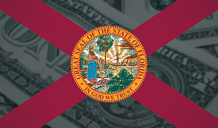This state is 8th in population density and 38th in Median Household Income, but don’t let the second statistic fool you, there’s plenty of money. Florida trends older and has one of the highest percentages of those already retired than most states.
Basically, there are three types of people in Florida: Retirees, Tourists and People whose jobs are to take care of the retirees and the tourists.
Additionally, the State of Florida is home only to a handful of Native American casinos, such as Seminole, and seems disinclined from legalizing and regulating Commercial Casinos, despite the fact that they are already a huge tourist state and that would make it even better.
In any event, we expect the lottery to perform at least average, at about $70/resident, in loss per resident, if not to actually beat that number.
The 2019 annual report.
The first thing that we will note, in brief, is that total lottery sales were $7,151,236,000 compared to total prizes of 4,638,488,000, thereby resulting in losses to the lottery of 2,512,748,000, which is well over two and a half BILLION dollars for the Fiscal Year. Florida is quite a populous state with the estimate for 2019 being 21.48M, so we see a loss of about $116.98/resident.
Of the 7,151,236,000 in sales, 4.9378B were in Instant Tickets, which had an overall return of 3.6295B, which is about 73.51%. Remaining sales were 2.2135B in Drawing games, which returned prizes totaling 1.0965B, for a total return-to-player percentage of about 49.54%.
All told, Instant Tickets return an average of nearly 75% to players, which is a much higher average percentage return than in other states. Of course, no slot machine in the State of Nevada could legally be set to that low of a percentage, so there’s that.
Drawing games returned under 50%, which is right about average. Anything within about 2% of 50% is going to be pretty standard and lots of it just has to do with it hitting a few more, or a few less, second-top prize winners than expected.
Anyway, Florida does better in traditional lottery loss per resident than Delaware, but that’s probably because most Floridians don’t have quite as many alternative gambling options as close by, much less at their fingertips.
Georgia:
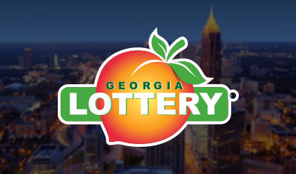Georgia is not unusual in the sense that they do not have any Commercial Casinos, but they are unusual in that they authorize certain games known as, “Games of Skill,” which basically function as slot machines, except the player must make a (very simple) decision in order to get awarded a win or an optimal win amount. Most of these games look and behave exactly like a slot machine, except after the spin is revealed, you’ll often have to move a symbol to a different spot, or pick one of two symbols, and you’ll get your prize accordingly.
The state is 18th in population density and 28th in median household income, so the overall demographics that we find correlate fairly well with traditional lottery loss per resident would point to the state being about average. Neighboring Alabama does not have a state lottery, so they might benefit from that slightly, as well as from there not being any major commercial casinos.
The Georgia Lottery Report has a separate line item that serves to deduct, “Tickets provided as prizes,” from ticket sales, so that’s fair enough. We can assume that these tickets are not also being added to the amounts for prizes paid out, otherwise, why separately account for them to begin with? With that, we see that the Georgia State Lottery had total revenues in sales of 4.776B for FY 2019 compared to 2.12B in total prize payouts for a total of 2.656B in total losses to the Georgia State Lottery.
Based on a population estimate of 10.62M for 2019, the result is a loss, per resident, of $250.09
What a huge number!
If the State of Alabama authorizes a lottery, we would expect for this to drop off a bit as Georgia can be expected not to get as many people crossing the border to play their lottery, particularly not the Mega Millions and Powerball games. This bears out as a little under 70% of total games sales for the state came in the form of instant tickets.
Scratch ticket sales were 3.219B of the lottery’s total sales of 4.776B, which leaves a total of roughly 1.557B attributable to Drawing Games, in total. (The disparity to total sales is because instant tickets awarded as prizes do not count towards either, we are also counting anything that is not Instant Tickets as drawing, though the lottery does not) Scratcher prizes totaled 2.072B, which results in a return-to-player of about 64.37% on Instant Tickets.
The biggest problem with this lottery report is that it describes all of the sales in paragraph form, but does not actually put the individual sales and prizes figures into a chart, or table, at any point. Just look at this report and compare to any three random states of your choosing and you will see that this one is much more difficult to make heads or tails of.
Hawaii:
 Did you know that Hawaii is the only state in the United States NOT to have any cities? That’s a fact, even Honolulu is not a city. The State of Hawaii doesn’t organize anything at any level smaller than County, so as a result, no cities.
Did you know that Hawaii is the only state in the United States NOT to have any cities? That’s a fact, even Honolulu is not a city. The State of Hawaii doesn’t organize anything at any level smaller than County, so as a result, no cities.
How do you get your mail? Well, you have Census-designated counties and census-designated places, which are things that other states do have.
Another thing that the State of Hawaii doesn’t have? Do you think I am made of Hawaii facts? I’m kidding, of course, they do not have a state lottery.
Like Alabama, they are considering starting a lottery.
But, this is seen as much less likely in Hawaii. This bill is not even really expected to make it out of the Senate, and almost certainly not out of the House. Interestingly enough, if they put it to a public vote---I might be wrong, but my inclination is to think that it would pass.
For my part, I would just vote, “Yes,” and not play it if it did pass. If other people want to play it, fine by me (even though they shouldn’t and the returns are awful) better their partial donations than the state/counties coming up with additional taxes that they have to slap on me to support education.
In the proposal, it’s said that the state would not necessarily participate in the multi-state jackpots, such as Powerball and Mega Millions, but maybe they would decide to do so. The proposal, as it is stated in the article above, does not necessarily rule out doing that.
Idaho:
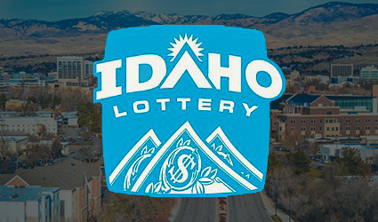One metric that we use as interpretative of results is competition from other forms of gambling and the lottery certainly does not have much competing with it in this state. Certain forms of social and charitable gambling (Bingo/Pull Tabs) are legal and there are a few Native American casinos dotting the map.
Given that Idaho ranks 36th in Median Household Income and 44th in population density, we would assume that not all residents have a ton of extra cash to spend on lottery tickets and, given that they are so spread out, many of them are not particularly convenient to lottery retailers.
For those reasons, we expect the loss per resident to be lower here than the average of the states, but the only way to know for sure is to check out the lottery report.
Drawing Tickets: $68,799,711
Instant Tickets: $170,464,207
Pull Tabs: $1,944,618
Touch Tabs: $46,704,400
All sales not counting Drawing tickets total: $219,113,225, which we will count as instant tickets in our chart, as they are most similar.
It’s also worth noting that Raffle Ticket sales are listed separately elsewhere, but adding them to a different listing for Draw Ticket sales reflects the total listed above, so raffles are treated the same as a drawing for general purposes.
Total prizes for drawing tickets, which include Raffle Prizes, were $34,283,682, which results in a return to player of 50.62% for all drawing type games.
Instant tickets returned prizes of $119,504,580, which reflects a return to player of 70.11% on those. Pull Tab prizes were $1,364,151, which represents a return to player of 70.15%, which is right in line with the returns from Instant Tickets proper. Finally, TouchTab Ticket prizes were good for $37,447,814, which resulted in a return-to-player of 80.18%.
For the purposes of our table below, all of these types of lottery sales will count towards Instant Tickets, as they are the closest in comparison, so we see overall prizes of $158,316,545 against total sales of $219,113,225 for a final return to player on Instant type tickets of 72.25%.
In total, $95,312,709 was lost by players to the Idaho State Lottery for Fiscal Year 2019, based on population estimates of 1.787M for the relevant year, the loss per resident to the Idaho State Lottery was about $53.34/resident.
As we expected, this is below average and also takes into consideration that we are counting Touch Tabs and Pull Tabs in with more traditional forms of lottery, but it seems reasonable enough because it’s not as though these are the sorts of gaming machines that would be found in Las Vegas, or other casinos.
Illinois:
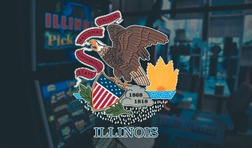Illinois is an example of a state that has a myriad of gambling options available to its residents. In addition to all of the normal land-based forms of gambling (casinos, charitable bingo), Illinois is also home to Limited Video Lottery terminal locations in a manner similar to a state such as West Virginia.
In other words, if you want to play on more casino-like machines, then there’s probably a place for you to do that which is relatively close to you. That would normally be a poor sign for traditional lottery loss per resident, but Illinois is also bolstered by the fact that they rank about 16th in median household income and 12th in population density, which are key correlative metrics for a lottery’s relative performance that we have identified.
Even though Illinois is not Top 10 in either of the metrics, they do have huge sections of the population living in and around Chicago, the third most populated city in the country. In a sense, they are actually less spread out than the population density ranking would make it seem. Driving through the state along I-70, for instance, you’ll only see a few small towns until you get close to the East St. Louis/St. Louis border area with Missouri.
The only thing that we can gather is that lottery sales for the year were 2,974,539,000 and total prizes were in the amount of 1,907,153,000, thereby resulting in an overall return to players of 64.12%, all games considered. The total amount lost to traditional lottery games was $1,067,386,000 which, based on an estimated population of 12.67M for 2019, comes out to a loss pre resident of about $84.25.
We’re left wanting for more specific information as this lottery report doesn’t really delve too far into sales for specific games, and to even less of an extent, prizes paid out for its specific games.
In any event, we come to find a state with an average loss to the lottery, per resident, that is somewhat higher than average that we mostly attribute to median household income and population density. If you live in or near Chicago, then you are almost certainly quite convenient to lottery retailers. While those folks are also relatively convenient to casinos, at least by Midwest standards, you don’t have full-scale casinos near you if you live in a city such as Springfield.
The damages to lottery revenues might also be somewhat mitigated by the fact that many of the Limited Video Lottery parlor locations also sell traditional lottery tickets.
Indiana:
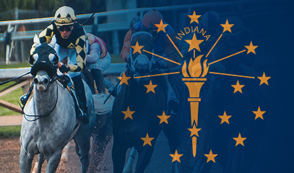Indiana is one state that we would expect not to perform as well in terms of average annual loss to the lottery, on a per resident basis. One of the reasons for this is the wide availability of other forms of gambling, amongst which are horse racing, commercial casinos and relatively unrestricted laws as relates charitable gambling.
Even if you live in an area of the state that doesn’t have many Commercial Casinos, in some areas, you live near a bordering state that does and those are relatively close to you.
Indiana is also less than average in resident earnings, ranking about 34th in Median Household Income.
If you’ve ever driven through Indiana on I-70, you might think that the state is ridiculously spread out and consists of Indianapolis, followed by a whole lot of nothing on both sides. If you’re used to big cities, for you, Indianapolis might also barely qualify. Surprisingly, Indiana has above average population density coming in at 16th, would you have guessed?
It’s kind of tough to guess how this state will do in average loss per resident because the combination of what we have identified as correlative metrics comes together to probably represent a roughly average state overall, but let’s see.
We have 1,347,755,657 in sales less 859,997,715 in prizes for a total loss to the Indiana State Lottery, during Fiscal Year 2019, of $487,757,942. Based on population estimates of 6.732M for 2019, that results in a loss, per resident, of about $72.45.
Sure enough, it looks like Indiana is roughly average in this regard. If you add the 34th in median household income to the 16th in population density and divide by two, then you’ll get 25th. Beyond that, the other legal gambling offerings in the state are probably fair;ly representative of what an average state looks like, so here we are with very close to average lottery loss per resident.
Iowa:
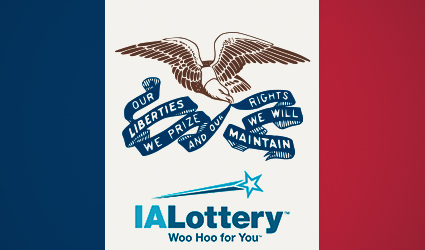There are many people who might consider Iowa to be a very red state, in terms of its politics, but that’s actually not strictly true. If you go back and look at the last six elections, you’ll see that they usually go both ways.
If you were one to see them as a very Conservative state, then you would perhaps be surprised to know that they are one of the least-restrictive states when it comes to gambling laws. In addition to Native American casinos, (which they would have no choice but to permit to operate in some capacity, even if they didn’t want to) Iowa is also home to Commercial Casinos and is one of the least restrictive states you’re going to find when it comes to Charitable Gambling laws.
When it comes to other demographics that we consider generally predictive, Iowa ranks 25th in median household income and 36th in population density.
In terms of key metrics that bode well for traditional lottery sales, and therefore, loss per resident, the state is average in only one---median income. Given a lower than average population density and more alternative forms of gambling than many other states, we do not expect traditional lottery to perform even at average here.
They also have a very compact and useful annual lottery report.
|
Game Type |
Sales |
Prizes |
Return to Player Percentage |
|
Instant Tickets |
250,642,094 |
166,890,489 |
66.59% |
|
InstaPlay |
11,876,560 |
8,255,638 |
69.51% |
|
Pick 3 |
7,871,469 |
4,670,681 |
59.34% |
|
Pick 4 |
4,292,190 |
2,553,524 |
59.49% |
|
Powerball |
54,833,508 |
25,454,010 |
46.42% |
|
Mega Millions |
36,322,749 |
18,473,201 |
50.86% |
|
Lucky for Life |
5,427,678 |
3,111,848 |
57.33% |
|
Lotto America |
8,753,137 |
4,300,353 |
49.13% |
|
Pull Tab |
10,876,605 |
6,805,266 |
62.57% |
Total sales from drawing tickets (does not include pull tabs) were $129,376,821 and total prizes from drawing tickets were $66,819,255 for a total return to player on drawing tickets of 51.65% on all drawing type games.
Total losses to the lottery include drawing games, pull tabs and instant tickets. The lottery counts promotional items as prizes towards players, and apparently has some sort of loyalty program, but we will not count these things because we would not know exactly where to apply them---so we are looking at just the games:
(250,642,094-166,890,489)+(129,376,821-66,819,255)+(10,876,605-6,805,266) = $150,380,510 in total losses by players to the traditional forms of lottery, as well as Pull Tabs. These losses are on an estimated 2019 population of 3.155M, thereby resulting in losses per resident of roughly $47.66.
Basically, this is as we expected. If you live anywhere near a bigger city in Iowa, then you’re almost certainly convenient to a casino. If you live in the middle of nowhere, then there’s a fair chance you’re not convenient to a casino or a lottery retailer. Would you be surprised to hear that Iowa has at least twenty casinos in the state? It’s true.
I’m sure the state Government doesn’t care. In addition to the ability to offer better returning games to players, the state Government makes more money off of their direct taxes on casino revenues anyway.
How do They Compare?
Kansas:
You might expect that Kansas, being generally thought of as a Conservative state, would be fairly restrictive when it comes to gambling. Believe it or not, while there probably won’t be any world-class resort casinos built there anytime soon, nothing could be further from the truth.
The Kansas State Lottery competes against both Native American casinos and state licensed and regulated Commercial Casinos for the gambling dollars of residents of the state. In addition, Charitable Gambling, which mostly consists of Bingo, can be found scattered throughout.
In other words, residents of the state often have a variety of gambling options available to them, which tends to usually not bode well for traditional lottery sales/losses per resident.
Kansas ranks 30th amongst the states (not counting Washington D.C.) for median household income, and is fewer than $2,000/year below average in that metric. However, coming in at 40th in population density, Kansas is really quite spread out, which doesn’t always bode well for traditional forms of lottery. Believe it or not, it’s really a simple matter of some people in the state not really being near a lottery retailer too frequently.
Of course, their annual report for the lottery sucks.
You actually have to order it. If you don’t feel like dealing with all of that, then you’ll just have to live with what little information they are willing to provide without the need to call them.
It’s 2021, people! It’s a report that is a matter of public interest! Figure out how to put it online as a pdf file---it’s not that hard!
The total sales were 295,282,190 with total prizes of 172,676,708, which results in an overall return to player of about 58.48%. Lottery players in the state would lose a total of 122,605,482 for the year in question, so based on a population estimate of 2.913M, the lottery total losses would amount to roughly $42.09/resident.
As we can see, the overall lottery returns to player are probably about average, if not a hair below average. Generally, we find that this happens most frequently when there is a larger percentage of sales in drawing tickets as compared to instant tickets---which usually pay better.
Basically, it’s not a wealthy state, (but does okay) the residents are spread out and there are much better returning, and more fun, forms of gambling available than traditional lottery. Even if you live in areas of the state where you’re not particularly close to one of your state’s own casinos, you might be close to one in a bordering state, such as Missouri or Oklahoma.
Kentucky:
 If you live in Kentucky and you like casino gambling, get ready to take a trip outside of Kentucky--because they don’t have it. If you live in Kentucky and you LOVE casino gambling, then I might recommend moving if you can.
If you live in Kentucky and you like casino gambling, get ready to take a trip outside of Kentucky--because they don’t have it. If you live in Kentucky and you LOVE casino gambling, then I might recommend moving if you can.
In addition to no commercial casinos, Kentucky does not have anything in the way of limited video lottery. There are some forms of Charitable Gambling, mostly bingo and pull tabs, but some residents of the state might not find themselves always convenient to a location that does that.
Horse racing, of course, but not everyone is into that. In other words, the Kentucky Lottery doesn’t have a ton in way of competition for the gambling dollars of the state’s residents.
There are a few metrics that don’t bode well for lottery sales, though. For one thing, Kentucky is 44th in median household income amongst the states, so your average citizen of the state probably doesn’t have a ton of extra bank laying around to waste on the lottery.
The median household income might be partially mitigated by the fact that the state is 22nd in population density, which you might not realize if you haven’t been to Kentucky at all or have only been to Appalachian Kentucky. Kentucky actually has a few mid-sized cities in the state as well as quite a few universities of considerable size.
Of course, college students don’t necessarily have a ton of extra money to spend on lottery tickets, so that might not be terribly helpful.
Let’s see how these metrics work together in terms of average lottery sales and losses per resident. We would expect the state to be pretty close to average, despite the relatively low median annual income, because not having any competing forms of gambling usually helps traditional lottery.
This one won’t be quite apples-to-apples because I was not able to find the 2019 Annual Lottery Report for Kentucky, so we have to settle for 2020, which is the most recent year available. I did my best, but couldn’t locate it, maybe the lottery only has the most recent year’s report available---I guess I’ll find out when the 2021 report comes out.
|
Game Type |
Sales |
Prizes |
Return to Player Percentage |
|
Instant Tickets |
741,063,000 |
523,684,000 |
70.67% |
|
Drawing Games |
429,116,000 |
251,615,000 |
58.64% |
|
iLottery Games |
33,263,000 |
25,942,000 |
77.99% |
In total, Kentucky residents would lose an astonishing $304,977,000 to the state lottery for Fiscal Year 2020. The estimated population for 2020 was about 4.48 million, so the loss per resident was an average of $68.08.
We are counting the iLottery games as drawing games, so you might be wondering exactly what the iLottery is: Basically, it just means that you can buy tickets for games such as Mega Millions and PowerBall online.
Why are the returns better? The answer to that is because the Kentucky lottery has a Keno drawing every four minutes for which tickets, you guessed it, can also be purchased online.
The state also has some other Instant Games that are mostly closely compared to scratch off tickets, but we have to file the iLottery in one category or another, so we picked Drawing Games for the large chart at the bottom of this page.
If you’re interested, then you can go to the Kentucky Lottery website and play demo tickets of the iLottery Instant games, even if you’re not physically in Kentucky. I don’t know if you can buy them from outside of the state, or not, because I have no desire to give Kentucky an expected 20-30% of whatever I spend on one of their tickets. I have no desire to give any lottery any money and you shouldn’t, either.
Honestly, we have no idea why the state would have these kind of games and not have Limited Video Lottery terminals that you could just throw in bars around the state. Hell, some of the cities are populous enough that you probably could financially justify building a mid-sized casino, so make some money that way! There’s no need to get create with iLottery games and other things of that nature to try to drum up revenues---just put slot and video poker machines in places and the Government will print money while the players get to play better return percentage games.
Louisiana:
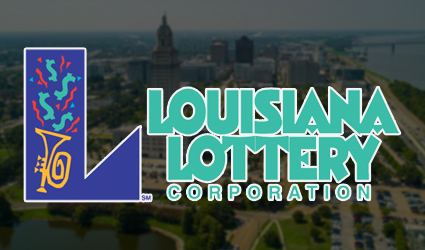Louisiana is great---they’ve had Commercial Casinos forever and also have charitable gaming and were one of the first states to get daily fantasy sports (DFS) officially regulated. Of course, the wide variety of better returning and more fun forms of gambling tends not to bode well for state lotteries, but maybe Louisiana will be an exception.
Louisiana is 47th in median household income, which is generally a metric that points to poor sales and losses per resident in traditional lottery, but it’s possible we might find an exception here. They are 23rd in population density, slightly below average, so many residents will find themselves convenient to lottery retailers. (Just glance around at the different states and you will find this matters MUCH more than you might think)
With that, let’s turn our attention to the annual report.
The overview includes the instant ticket sales, drawing ticket sales and overall prize expenses. Instant ticket sales were 225,573,998 and drawing ticket sales totaled 298,393,430 for a total of 523,967,428 against 285,330,406 in prizes for a return to player percentage of 54.46% overall (mainly low due to slightly more than half of the sales coming from poor returning drawing tickets) and player losses of 238,637,022.
Based on a population of about 4.649M people for 2019, the average citizen of the state would lose about $51.33/resident to these traditional forms of lottery.
As we can see, the result is much lower sales and losses, on a per resident basis, to the traditional lottery. That’s about what we expected because, other than a relatively average population density, all other metrics that seem to correlate with lottery revenues were working very much against them.
It’s still no matter, the State Government does much better overall by way of casino revenue taxes than it would be doing if the lottery had no competition. Much of the money that floats into the state’s casinos comes from tourists, which is where you want money to be coming from when your state’s residents don’t have very much (compared to other states) of their own money.
There are a few factors that contribute to the terrible returns -to-player (54.46% overall) for this lottery. The first factor is that the instant tickets are not very good. Secondly, more than half of the state’s total traditional lottery sales come from drawing tickets---which have an even worse return. Finally, about half of those drawing ticket sales come from Mega Millions and Powerball, which have the worst returns to player of almost any lottery there is.
Here are more specifics:
Looking into the individual game type prizes, we see that instant prizes totaled 135,528,594 against the 225,573,998 in sales, thereby resulting in a return to player percentage of 60.08% on those types of games. That return is terrible, even by instant ticket standards, but it’s nowhere near as bad as the return on the drawing ticket games in the state.
Drawing games in the State of Louisiana, in 2019, would return a total of 149,801,812 in prizes against a total of 298,393,430 in sales, thereby resulting in an overall return to player of 50.20% for drawing game types.
Jackpot or bust, I guess. Unfortunately, for the state’s lottery players, it’s almost always bust. That said, these returns to player are putrid even by lottery standards.
Maine:
Maine is kind of an isolated state which has only recently legalized and regulated a few Commercial Casinos, so while they have always been fairly unrestrictive on charitable gaming, there’s not a ton to do in the way of gambling in the state. Actually, Maine is one state that could really benefit from the licensing and regulation of limited video lottery terminals as that would enable them to put a few machines in the state’s bars---and Mainairds sure do like to drink.
On top of that, they have horse racing, but it’s not terribly popular. Simply put, the State Lottery does not have a ton of competition for the gambling dollars of residents of the state.
Maine is 35th on median household income, which generally doesn’t bode well for traditional lottery revenues. As we discussed earlier and sometimes contrary to popular belief, the lottery is not usually played by people spending their bottom dollars on a shot at a jackpot instead of buying baby formula---it’s usually played by people who can afford to lose a few bucks. For more information on that, we recommend that you scroll up to the California section and check out the demographic breakdowns in their Annual Lottery Report.
Maine is also 38th in population density, which makes them one of the most relatively spread out states. Additionally, northern parts of the state can sometimes get absolutely pummeled by snow, so all things considered, many residents of the state do not always find themselves convenient to a lottery retailer. Once again, population density correlates with this a lot more than some people might think, just compare a few states and see for yourself!
The 2019 Lottery Report, what’s excellent about this report is that it’s the only one that I have found that actually breaks down instant ticket sales and prizes by ticket denomination, so good on Maine for being transparent about that! Let’s take a look at how much people can expect to get back from each ticket type purchased:
|
Game Sales |
Game Prizes |
Game Return to Player |
|
INSTANT $1 Instant-8,184,085 Heritage Fund-1,852,878 $2 Instant-25,202,894 $3 Instant-24,301,032 $5 Instant-67,891,895 $10 Instant-44,511,030 $20 Instant-22,516,540 $25 Instant-30,174,900 Instant Total-224,635,254 DRAWING Pick 3-5,394,851 Pick 4-4,337,305 Megabucks-11,810,740 Powerball-22,350,828 Hot Lotto-0 Lucky for Life-3,713,174 Lotto America 2018-1,980,196 Gimme 5-1,079,847 Mega Millions-16,300,415 World Poker Tour-1,250,226 Drawing Sales-68,217,582 FAST PLAY $1 Fast Play-761,412 $2 Fast Play-1,257,453 $5 Fast Play-4,040,035 $10 Fast Play-539,960 Fast Play Sales-6,598,860 |
INSTANT $1 Instant-5,025,982 Heritage Fund-1,134,686 $2 Instant-16,655,443 $3 Instant-16,098,691 $5 Instant-46,751,162 $10 Instant-32,476,733 $20 Instant-16,816,099 $25 Instant-23,306,867 Instant Total-158,265,663 DRAWING Pick 3-2,698,992 Pick 4-2,175,962 Megabucks-5,932,716 Powerball-11,194,437 Hot Lotto-0 Lucky for Life-2,208,569 Lotto America 2018-989,649 Gimme 5-572,329 Mega Millions-8,615,907 World Poker Tour-784,846 Drawing Total-35,173,407 FAST PLAY $1 Fast Play-465,181 $2 Fast Play-854,615 $5 Fast Play-2,774,884 $10 Fast Play-398,158 Fast Play Total-4,492,838 |
INSTANT $1 Instant-61.41% Heritage Fund-61.24% $2 Instant-66.09% $3 Instant-66.25% $5 Instant-68.86% $10 Instant-72.96% $20 Instant-74.68% $25 Instant-77.24% Instant Average-70.45% DRAWING Pick 3-50.03% Pick 4-50.17% Megabucks-50.23% Powerball-50.09% Hot Lotto- Lucky for Life-59.48% Lotto America 2018-49.98% Gimme 5-53.00% Mega Millions-52.86% World Poker Tour-62.78% Drawing Average-51.56% FAST PLAY $1 Fast Play-61.09% $2 Fast Play-67.96% $5 Fast Play-68.68% $10 Fast Play-73.74% Fast Play Average-68.09% Overall Average-66.13% (Excluding Heritage) |
As we can see, the more the instant ticket costs, the better the return percentage. Unfortunately for high-ticket players, it’s obviously worse to lose almost 23% of $25 than it is to lose almost 39% of $1. Even though the higher denomination tickets have (as we would expect) better percentage returns, you’re basically going to get slaughtered just as quickly, or maybe even faster, if you’re one of those who just scratches the barcode and scans the ticket instead of even really looking at the game.
Drawing tickets are as bad as we would expect and tend to be generally consistent with anything else that you would find. The overall percentage return to player (instant and drawing) is 66.13%, mostly on the strength of a high percentage of the sales being better returning instant tickets. We’d guess those are probably mostly used for stocking stuffers and such, and would recommend just giving people gift cards instead.
For the purposes of our Table on the bottom of the page, “Fast Play,” will count toward Drawing Games lottery. The total amount lost to the lottery in the State of Maine for Fiscal Year 2019 was $101,519,788 which, based on a population of about 1.344M for 2019, comes out to a loss of about $75.54/resident.
The losses to the State of Maine in traditional lottery are certainly on the high end of average, on a per resident basis, but are nothing too shocking. It just seems like the lottery is a moderately popular way to gamble in a state that might suffer for convenient alternative gambling options.
Let’s look at the Expected Loss by Instant Ticket Cost:
$1 Ticket: $0.3859
$2 Ticket: $0.6782
$3 Ticket: $1.0125
$5 Ticket: $1.5570
$10 Ticket: $2.7040
$20 Ticket: $5.0640
$25 Ticket: $5.6900
Maine is one example of a state that does better than average on lottery losses per resident and actually runs contrary to what we would expect to happen based on our key three metrics of median household income, population density and availability of other forms of gambling. The only metric that would work in the state lottery’s favor is that there isn’t much, gambling-wise, that they are competing with.
Of course, Maine is one of the most geographically isolated states in the country and the closest states to it (Vermont and New Hampshire) don’t have casinos, so you probably don’t see as much gambkling money leaving the state as you might in some other states which, while they might not have casinos themselves, border states that do.
Maryland:
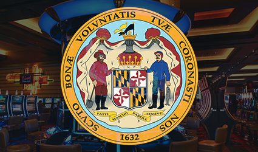Maryland is a state that has expanded its gambling offerings to include Commercial Casinos in the relatively near past. Such casinos can be found in cities such as Baltimore and at resorts such as Rocky Gap, just to name one.
For the residents of Maryland, you don’t have to necessarily be near a casino within your own state to be near a casino. Bordering states such as Pennsylvania, West Virginia, Delaware and New Jersey (kind of bordering, might as well be) also have Commercial Casinos. In fact, the only border state that does not is Virginia, but that’s going to be changing as residents of a few different cities voted to authorize Commercial Casinos in 2020.
So, Maryland has working against it one of the key metrics that seem to correlate with how much is spent (and lost), on average, to the state lottery.
However, when it comes to median household income, Maryland ranks #1, which is perhaps an even more important metric when it comes to lottery spending per resident. As we have discussed before, the common stereotype of lottery players being those who can’t afford to lose the money is something of a misconception and the biggest demographic category (in terms of lottery spending) is those of approximately average income, if not just a little higher.
Maryland is also 5th in population density, which is another key metric that we have identified that correlates to high, per resident, lottery spending. As simple as the concept sounds, the reason for this correlation is that a high percentage of residents find themselves conveniently located to a lottery retailer. There’s sometimes no need to overcomplicate things.
With that, we would expect that the State Lottery in Maryland does quite well, despite the fact that there are better returning and more fun methods of gambling that compete for the discretionary income of the state’s residents, but the only way to know for sure is to check out the Annual Report.
We certainly aren’t going to be getting the specifics that we did from the Maine Lottery Department, not even close, as Maryland only fgives the most basic of numbers as related to sales and prizes.
Total sales were about 2.197B and prizes were worth 1.362B resulting in an overall return to lottery players of about 61.99%. It’s a simple affair to break down the returns even without the numbers---Instant Tickets returns were horrible and drawing game returns were even more horrible; it’s all the same.
835M dollars was lost to the Maryland State Lottery during Fiscal Year 2019, so based on a population estimate of 6.046 million for the year, we come up with a loss of roughly $138.11 per resident.
Overall, we find that the average lottery loss per resident is significantly greater than average, which is because the average resident has plenty of extra money that he or she is willing to part with and the average resident is convenient to a lottery retailer.
The overall return to residents of this state lottery is about average, which we would suspect just has to do with the proportion of instant tickets sold as compared to drawing tickets. That’s typically what it comes down to as Instant Ticket average returns (nationwide) tend to be in the 65-70% range whilst drawing games tend to return an average of 50%. The drawing game returns tend to not deviate that much, and when they do, it’s usually because it’s one of the handful of states that have some sort of Instant Keno game with drawings held in intervals of a few minutes apart.
Massachusetts:
What we are going to find with the State of Massachusetts is a state that compares pretty closely to Maryland above when it comes to key lottery metrics. The metrics that we have found that seem to correlate with strong lottery sales per resident are population density, median household income and (lack of) availability when it comes to other forms of gambling.
When it comes to Commercial Casinos, those were recently legalized and regulated in the state, but when compared to population, the availability of these (casinos per resident) is fairly low when compared to other states. The lottery also competes for the gambling dollars of the state’s residents with Charitable Gambling operations, but as with most other states, Charitable Gambling revenues are somewhat negligible compared to lottery.
Massachusetts ranks 4th in Median Household Income, which tends to bode well for traditional lottery sales. Simply put, residents tend to have a few extra bucks, compared to other states and they don’t mind spending a little of their discretionary income on gambling with the lottery. Mostly owing to the populace of Boston, and the very small geographic footprint of the state, Massachusetts ranks 3rd in population density, another key metric that correlates well with high lottery spend. The reason for that, of course, is that most residents are logistically convenient to one, and usually several, different lottery retailers.
We expect the traditional lottery for this state to do extremely well, but the only way to know for sure is to check out the lottery’s annual report, which can be found here:
In any event, lottery sales totaled 5,508,564,000 and prizes amounted to 3,987,258,000 which would be a return to player, overall, of 72.38%. That’s actually a much higher average return than one would see with other state lotteries, we presume, due to a high proportion of Instant Ticket sales and maybe some comparatively better returning games, such as Instant Keno. Unfortunately, there doesn’t seem to be a full breakdown of games and returns.
The reason why is fairly obvious, Instant Tickets and Keno combined for 85.9% of all Massachusetts Lottery sales for the period whilst Powerball and Mega Millions accounted for a total of 5.3% of sales. It seems that the residents of Massachusetts are mostly well-versed enough on gambling to avoid the absolute worst games.
Total losses to the Massachusetts Lottery during this period were 1,521,306,000, which based on a 2019 population estimate of 6.893M, would result in a loss to the lottery, per resident, of about $220.70, which is a HUGE number compared to other states. Massachusetts folks sure love those Instant Tickets!
As we expected, Massachusetts has one of the highest losses, per resident, to the state lottery in the entire country. As a percentage of lottery revenues, Mega Millions and PowerBall are almost negligible when compared to those percentages in other states, and those also tend to be (by far) the worst returning games, therefore, the fact that Massachusetts would have a greater return to player (on average) than other states makes total sense because the bulk of the sales come from Instant Tickets and Keno.
When we look at the Lottery Report for Maine, we see that residents of that state tend to favor better returning high-denomination instant tickets, and given that residents of Massachusetts have an even greater median household income (by a lot) we assume that those residents also spend a lot of money on the high end tickets, which further helps contribute to a high overall return to player, at least, by lottery standards.
Michigan:
Michigan has a wide variety of ways to gamble and is one of the only states that have both thriving Native American casinos as well as Commercial Casinos. Michigan is always on the forefront of authorizing as many forms of gambling as possible and was one of the states (along with states such as New Jersey and Pennsylvania) leading the charge to overturn PASPA (Professional and Amateur Sports Protection Act), thereby giving the state the ability to legalize and regulate sports betting.
Furthermore, the state of Michigan has also legalized and regulated online casinos and has relatively unrestrictive laws when it comes to Charitable Gambling operations. In addition to Bingo, “Monte Carlo Nights,” are relatively common in this state.
The only form of gambling that the state hasn’t seemed to embrace, at least not yet, is that of LImited Video Lottery Terminal locations, such as those that are seen in states such as Illinois and West Virginia. We would imagine that this is only going to be a matter of time, but maybe they will surprise us and not authorize such a thing. They really should as it is a tremendous source of Government revenues, quite frankly, West Virginia would be pretty screwed without these limited VLT locations.
While wide availability of other forms of gambling does not usually bode well for traditional forms of lottery, Michigan is 31st in median household income, which is only slightly below average. Additionally, the stage is 17th in population density, mainly on the strength of population centers such as Detroit, Lansing and a few others. Combined, they are roughly average in the other metrics that would point to strong traditional lottery sales. While the state’s residents are not rich, by any means, they are mostly convenient to lottery retailers.
In any event, Michigan residents would have lost about 1.5327B for the fiscal year which, based on a population of 9.987M, would reflect losses of about $153.47/resident. That’s honestly a surprisingly high number given all of the other forms of gambling in the state but, despite the competition, the lottery seems to do better every year!
Another surprise is, despite some stricter lockdowns than perhaps a few other states (though not as strict as others) 2020 was an even better year for the state lottery than was 2019. I guess they found a pretty good balance.
The lottery breaks down the different game sales and prize types by general category, so we will look at sales, prizes and return to player below:
|
Game Type |
Sales |
Prizes |
Return to Player |
|
Instant |
1.6555B |
1.2200B |
73.69% |
|
Drawing |
1.4385B |
751.3M |
52.23% |
|
Club |
650.9M |
433.9M |
66.66% |
|
Other |
152.5M |
? |
? |
Honestly, we don’t really have an easy explanation for the high loss per resident for this state lottery, muchy higher than the national average, because the metrics really don’t point to a traditional lottery doing so well. For those of you who don’t know, “Club Lottery,” just refers to an Instant Keno game that exists in the state with drawings at regular intervals, and honestly, those returns to player are pretty terrible for such a game. Even without that form of lottery, residents of the state would still lose way more to this lottery than residents of other states.
There are probably only three or four states in the country where the lottery losses per resident can’t be explained by our three key metrics, and Michigan is one of them. Maybe their marketing department is just that good. If you have any theories or insight, feel free to E-Mail us as we would love to know why this lottery does better than we would expect.
Minnesota:
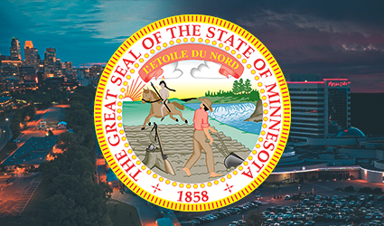Minnesota is generally unrestrictive when it comes to gambling. For those interested in full-scale casino offerings, there are plenty of Tribal Casinos dotting the landscape. Additionally, horse racing tracks are permitted to operate poker rooms as well as Table Game pits, though slot machines are not permitted in those locations.
Overall, the gambling offerings here are pretty average when compared to other states. There are also some Charitable Gambling options, mostly consisting of Bingo and Pull Tabs.
In terms of the other metrics that usually have a direct correlation to lottery sales per resident, Minnesota is 13th in median household income and 30th in population density. The first of those two statistics tends to bode well for traditional lottery revenues while the lower than average population density tends to bode poorly. Of course, the state does not deviate too far from average in either of these metrics, so all things considered, we would expect lottery loss per resident to be about average.
Let’s see how that plays out by looking at the annual report.
The first thing that we find are Gross Receipts for that year totaling 595,435,875, of which 455,049,114 came out in the form of prizes, commissions and ticket costs. Unfortunately, that doesn’t entirely concern the player, so we will have to dig deeper to ascertain how much the players actually lost.
We can find the prizes listed by individual game type further down, so let’s go ahead and put that here, along with the returns to player:
|
Game Type |
Sales |
Prizes |
Return to Player |
|
Instant “Scratchers” |
435,268,778 |
292,093,287 |
67.11% |
|
Drawing |
201,541,475 |
103,498,719 |
51.35% |
Okay, apparently the lottery also gets a negligible amount of revenues even outside of this, so we see a total of 636,810,253 in total ticket sales against 395,592,006 in prizes for an overall return to player of 62.12% and total losses to the lottery of 241,218,247. Based on a population estimate of 5.64M for 2019, the loss per resident comes out to a low $42.77.
The overall return to player is about average by state lottery standards, but perhaps surprisingly, the average loss per resident is significantly below that when compared to the traditional lottery loss per resident of other states.
Minnesota is another example of a state that does not seem to adhere strictly to what our key metrics would suggest. We would expect this state to be right about average in terms of traditional lottery revenues.
One theory for the relative underperformance might be that the Minnesota Lottery is young, but given that it was established in 1988, we know that’s not true. We do note that Minnesota is one of the younger states, in terms of average age per resident, and most lottery players tend to be about middle-aged, so that could be a factor. With an average resident age of 38.3 years old, Minnesota is in the youngest third (barely) of states.
One thing that we note is that the Minnesota State Lottery does not have an Instant Keno game, furthermore, it appears that they do not sell lottery tickets online, so instituting both of those things might improve the state’s lottery revenues somewhat and could partially account for the disparity compared to other states.
In terms of educational attainment, we find that Minnesota is 3rd in high school graduation rates and 11th in percentage of those with a Bachelor’s Degree or higher, so that might contribute somewhat to people not being as inclined to play the lottery.
Overall, we tend to think that it’s mainly just a combination of comparatively low population density (below average, anyway) and the fact that the lottery is as traditional as it gets selling tickets only physically and without any Keno games. We also note that instant tickets have a slightly poorer-than-average return, when compared to other states, which might be enough to get noticed.
Mississippi:
In 2018, The State of Mississippi first authorized a lottery, so there is currently no annual report available (as of the time of this writing) with full year data. We would expect that the state was tired of seeing residents’ money cross the border into other states---particularly when multistate jackpots such as Mega Millions and Powerball went high enough.
MIssissippi has finally decided to get in on the action.
When full-year data becomes available, we predict that the Mississippi State Lottery will have lower revenue per resident compared to most other states for a few reasons:
1.) Mississippi is home to Commercial Casinos, and generally, we find that state lotteries don’t perform quite as well when they have better returning and more fun forms of gambling to compete with.
2.) As we’ve already mentioned, the lottery is very new and will probably take some time to find its feet. Many of the folks in other states who spend a lot of money on the lottery have been doing it for years and are already in the habit of buying a ticket anytime they get gas, or what have you. Many of the players who like drawing games buy a ticket for every drawing almost unfailingly.
3.) Mississippi is a generally poor state that ranks next to last for median resident income. Though there are a few exceptions, we have found that this usually correlates to a low lottery spend per resident.
4.) Mississippi ranks 32nd for population density, which is not meaningfully less, but is certainly a little bit lower than the national average. What we have found is more densely populated states tend to have more lottery retailers convenient to the average resident of the state, which makes total sense. The low median income will be the toughest metric for the state’s lottery to overcome, but being somewhat spread out also won’t help matters.
I guess we will just have to wait and see if we are right!
Missouri:
Missouri has been a fairly liberal state for gambling and residents have many different options. in addition to plenty of Charitable Gambling Bingo and Raffles, this state has been home to Commercial Casinos much longer than most others.
However, not every resident of the state has historically had easy access to the casinos. Missouri had a, “Riverboat,” gambling law by which gambling establishments technically had to be on one of the waterways. We emphasize the word, “Technically,” because many of these were just huge concrete slabs that were built and everything else about the establishment is as if they were just on land.
The state’s Supreme Court actually ruled that some of the casinos were in violation of the letter of the law, but the Executive and Legislative branches weren’t particularly inclined to do anything about it because they didn’t want to lose the revenues flowing in to the Government.
Most casinos in the state are in the Kansas City, Branson and St. Louis areas, so there are some moderately-populated towns and cities that aren’t particularly close to full scale Commercial Casinos.
Ranking 40th in median household income usually wouldn’t be a positive indicator for the state’s traditional lottery fortunes, but again, the lottery department doesn’t have too many casinos to compete with and lottery games are often the only games in town for many of the state’s residents.
The State of Missouri ranks slightly below average, 28th, in population density. However, Missouri is somewhat different than other states in that it has substantial land area with the population heavily concentrated in cities such as Kansas City and St. Louis. Springfield and Columbia are somewhat populated, but the rest of the Top Ten (as well as much of the Top Twenty) is made up of cities that are really just suburbs of Kansas City and St. Louis.
Basically, it’s a state made up of big population centers, and otherwise, mostly vast expanses of nothing. Let’s see how the lottery revenues per resident compare to elsewhere in the country.
The first thing that we find is a simple summary that separates lottery ticket sales from total prizes, so we can use this to ascertain the overall loss to the Lottery for that Fiscal Year and then gather our loss per resident. Lottery ticket sales totaled 1,466,028,703 for the year and prizes were 1,015,091,349 for a total return to player of 69.24%. Total losses amounted to 450,937,354, which based on a 2019 population estimate of 6.137M, comes out to a loss of $73.48/resident.
Some states are way out of the ballpark of average, but Missouri is not one of them. With that said, they are certainly going to be in the top half of loss per resident to the traditional lottery.
The State of Missouri also has Pull Tabs, which we will account for separately in this section in return to player terms, but will be included in Instant Tickets for the chart at the bottom of this page.
|
Game Type |
Sales |
Prizes |
Return-to-Player |
|
Instant Tickets “Scratchers” |
914,449,548 |
666,811,269 |
72.92% |
|
Drawing Tickets |
437,528,006 |
245,716,968 |
56.16% |
|
Pull Tabs |
114,051,149 |
102,563,112 |
89.93% |
Pull Tabs account for a not insignificant percentage of revenues, but don’t really have much of a bearing on loss per resident, because they tend to return comparatively well. Still, these account for about $2 in losses, per resident, and help to push Missouri just over the national average in lottery revenues, per resident.
Instant Tickets return considerably better than average in Missouri, which might be led by high denominations selling relatively well compared to others. They also account for more than 60% of all lottery revenues, which pulls the average return-to-player up, all things considered.
Drawing ticket games similarly return better than average, not that it means they are any good---they aren’t. Apparently, some of the drawing games in MIssouri aren’t quite as awful as those you might find elsewhere.
Despite the relatively low median household income compared to some other states, the Missouri lottery performs a hair over average, in terms of loss per resident overall. Maybe the fact that the returns aren’t as terrible as with other state lotteries helps with this and makes residents feel as though they are getting some value.
Montana:
Montana might be one of the best states to be in the entire country if you love gambling. The entire state is dotted with basically miniature casinos, similar to, but bigger than, West Virginia Limited Video Lottery parlors that can be found across the entire state. Additionally, the state is home to Commercial Card rooms and has a few different forms of Charitable Gambling.
In other words, traditional forms of the Montana State Lottery have a lot to compete with for the state’s gambling dollars, but the good news for them is that they are basically just competing with their own other offerings.
Montana ranks 38th in median household income, so that’s usually a bad metric for traditional lottery, as it puts Big Sky Country in the bottom third of the nation. Montana is also extremely spread out, third only to Wyoming and Alaska for least population density, so not all residents are necessarily convenient to a lottery retailer. Some have to drive for miles out of the mountains just to get groceries, but it sure is a beautiful state.
We would expect, given all of these factors, that the loss per resident to traditional forms of lottery will be very low.
|
Game Type |
Sales |
Prizes |
Return to Player |
|
Instant Tickets |
18,531,003 |
11,110,279 |
59.96% |
|
Drawing Tickets |
41,723,120 |
23,382,132 |
56.04% |
In addition to the fact that Instant Ticket returns are poorer than other states, Montana is one of the only states for which they are not meaningfully better than Drawing Game returns. With that said, Drawing Games return better than those of other states, slightly, but a disproportionate number of big winners could be making that difference given how low overall sales are.
The result is that total losses to the Montana Lottery for Fiscal Year 2019 amounted to $25,761,712, which based on a population estimate of 1.069M for the year amounts to an average loss per resident of $24.10. This makes it one of the lowest losses in the entire country, on a per resident basis. The main reason why is because, as mentioned before, residents have a wide variety of better gambles readily available to them.
It turns out that we have assumed correctly and Montana also has one of the highest percentages of sales coming from Drawing Tickets as compared to scratch offs, but this is probably because residents are mainly just interested in huge jackpot games or games with better returns. After all, if they are near a lottery retailer, they are probably near a location with video lottery terminals---often the same place.
While traditional lottery clearly doesn’t do very well in the state, the state Government does pretty well on gambling revenues as a whole. Even though the return to player from the games is better and the state takes a smaller cut of revenues, casino gambling revenues will always crush revenues that traditional lotteries bring in.
Nebraska:
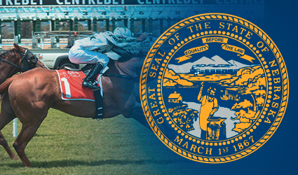The State of Nebraska is generally somewhat restrictive when it comes to gambling. There are a few horse tracks in the state, but they mainly just operate now in the hope of being permitted to continue to offer historical horse racing machines. Historical horse racing machines look kind of like slot machines, but play takes place on a pari-mutuel basis and wins and losses are based on horse races from years past.
Even these are currently being argued as the State Attorney General says they are not legal and has been engaged in an effort to prevent them. Of course, the horse racing tracks will eventually be doomed without them as they can not survive on live racing (there barely is any) and simulcast alone, but I guess the A.G. doesn’t care about that.
Anyway, the horse tracks in the state operate only on a limited schedule and some sites even have only one live horse racing event per year.
Nebraska is also one of only four states (that even have Federally recognized tribes protected by the Indian Gaming Regulatory Act) to not work any Class III gaming into the compact, machines in the Tribal casinos within this state are Class II units. It should come as no surprise that Tribal Casinos in nearby states are often larger and do better than the ones that you will find here.
Charitable Gambling is mostly limited to Bingo and Raffles. Essentially, the Nebraska State Lottery doesn’t have much competition for the gambling dollars of the state’s denizens, which usually tends to bode well for loss per resident, but we will have to see how it goes.
Agrarian Nebraska is 26th in median household income, which is perhaps better than some people might expect. That puts the state solidly in the middle of the pack. That normally bodes well for state lotteries.
However, citizens of Nebraska find themselves quite spread out, considering that the state ranks only 43rd in population density. There really just aren’t that many big cities in Nebraska and the majority of residents are either relatively isolated or live in small towns.
Okay, so what you are looking at is a very spread out state of average income with little in the way of in-state competition for gambling dollars that faces plenty of out-of-state competition with Tribal Casinos that are permitted to have better offerings.
All sales and prizes paid out are listed as total line items and are not broken down in any way whatsoever, so the result is that we simply don’t have a whole heck of a lot to work with. What we do have is total sales of 192,125,860 against total prizes of 113,305,246 for an overall return to player of 58.97% and total losses of $78,820,614.
The population estimate for 2019 was 1.934M, thereby resulting in an average loss per resident of about $40.76.
Nebraskans just aren’t terribly inclined to play the lottery and when you look at the combined rankings in median income and population density, they’re in the middle thirties, on average. Many residents of the state aren’t terribly convenient to a lottery retailer, so there are probably some residents who buy tickets when they do stop at one, but they don’t necessarily pass one by daily, or even weekly.
It only has a minor impact, but the state also doesn’t have any sort of lottery Instant Keno game, either. They probably don’t want one anyway.
Nevada:
The state that is basically synonymous with gambling, Nevada, does not have a state lottery. If you think about it, that’s not much of a surprise because the state has had commercialized and regulated full-scale casinos before many other states even instituted a lottery.
Beyond that, while the State of Nevada only takes a small slice of casino revenues, there are hundreds of casinos in the state of various sizes and Las Vegas is the gambling mecca of the world. The state really doesn’t need a lottery and it’s tough to tell how well it would do.
Of course, there are often stories about Nevada residents crossing the border into neighboring states when the Powerball and Mega Millions jackpots get high enough, so maybe they’d make a little money there, but the state simply doesn’t seem interested.
New Hampshire:
New Hampshire is a pretty unique state for the lottery department. While New Hampshire is not isolated from other states, per se, they’re not particularly close to any states (other than Maine, which only has a few casinos) to any states that anyone would consider major gambling states.
Massachusetts has a few casinos now, but that could be quite a drive. Many New Hampshire residents go to Foxwoods and Mohegan Sun, in Connecticut, from time to time and the recently opened casinos in Maine are also an option---but nothing in state and no full-scale casinos in Vermont, the state with which New Hampshire shares its longest border.
While you won’t find any full-scale casinos with slot machines in the state, poker and certain Table Games are classified as, “Games of Skill,” and as such, are legal. Quaint little card rooms that usually only consist of a handful of tables can be found dotting New Hampshire’s map, and if you live in New Hampshire, you’re probably not far from one. (Because if you live in New Hampshire, you’re not far from anything else in New Hampshire---it’s pretty small)
New Hampshire is 7th in median resident income, which normally points to traditional lottery doing well in terms of revenue per resident. Contrary to what some people think, most lottery players are not destitute, they have a few extra bucks to spend. That description certainly applies to residents of this state, it’s quite wealthy.
Perhaps surprisingly, New Hampshire is only 21st in population density. Keep in mind that still makes the state more dense than the average state and it’s not so much that the residents are spread out...it’s that there aren’t really that many of them. If New Hampshire had a highway running from its southernmost point to its northernmost (about 190 miles) and that highway had a Speed Limit of 65 mph, you could cross the longest possible part of the state in under three hours.
Our usual correlative metrics would point to a lottery that should do well, but the only way to know for sure is to look at the Annual Report.
|
Game Type |
Sales |
Prizes |
Return to Player |
|
Instant |
250,477,088 |
170,732,028 |
68.2% |
|
Keno |
26,959,048 |
18,491,109 |
68.6% |
|
Tri-State Games |
27,582,991 |
14,783,734 |
53.6% |
|
MUSL Games |
69,227,769 |
33,492,462 |
48.4% |
|
Lucky For Life |
5,606,632 |
3,312,360 |
59.1% |
In total, we see that all prizes come out to 240,811,693 against lottery sales of 379,853,528 for traditional lottery types, thereby resulting in an overall return to player of 63.4% and total losses of 139,041,835. Based on a population estimate of 1.36 million for 2019, we come up with an average loss, per resident, of about $102.24, which makes this one of the more played state lotteries.
Also, feel free to check the report if you are interested in New Hampshire’s charitable gaming information. While they don’t collect anything from that, they do gather and report the information on those types of revenues, so the lottery must be the entity who regulates that for the state.
Overall, this lottery has a slightly better than average return-to-player, despite the fact that instant ticket returns to player are worse than the 70% average we would expect to see. The overall average is aided significantly by the fact that almost 75% of New Hampshire lottery sales are either Instant Tickets or Keno, both of which tend to return more than drawing type games.
MUSL just refers to, “Multi-State,” Lottery games, such as Powerball and Mega Millions. Given the low percentage of sales that those games make up, it seems that the residents ofg the state seem to at least know enough to stay away from those. Me? I’d rather play in one of the state’s little card rooms, some of them are pretty classy.
New Jersey:
New Jersey is going to be an interesting state because it is the second most well-known state for having Commercial Casinos in the country. However, that doesn’t necessarily mean that the lottery is always in competition with them because those casinos are limited to Atlantic City, so residents elsewhere in the state are probably relegated to playing the lottery or going to Charitable Bingo events if they wish to gamble.
In terms of our key metrics, New Jersey ranks second in median household income, so your average resident has plenty of extra money to spend---especially before you account for the fact that the state is also #1 for property taxes! Ouch. Sorry, guys.
New Jersey is the most densely populated state, which means that there are people just about everywhere you go, or at least nearby. New Jersey is mainly concentrated in some large cities and larg(ish) small towns. Even the smaller towns on’t do anything to hurt the population density just because the state is quite compact, in terms of land area, it ranks 47th.
All of these factors mean that there is relatively low competition for the gambling dollar of (most) residents, that they have a few extra bucks to gamble with AND that they usually are convenient to a lottery retailer. For these reasons, we would expect the state to have one of the largest losses per resident in the entire country, but the only way we will know for sure is by looking at the stats.
The first financial page relevant to us simply lists overall sales and prizes that were paid out, so we see that the state had 3.482B in sales and paid out 2.087B in prizes for Fiscal Year 2019, which results in an overall return of about 59.94% considering all games and losses in the neighborhood of 1.395B. The estimated population for the state was 8.882M for 2019, so we can surmise that the average loss to the lottery, per resident, was about $157.06.
Personally, I’m a little surprised by this because there is one area of competition that we didn’t mention---online gambling.
New Jersey was one of the first states to legalize and regulate Commercial Online Gambling. Online gambling can be offered to anyone in the state by the Atlantic City Casinos, or any other online casino that obtains a license through one of the land casinos in the state. Of course, online gambling in the state seems to be unending in how it performs in terms of year-over-year revenue increases. It will definitely level out at some point, but it’s hard to say when, because all it has ever done is gain year-over-year since instituted.
Obviously, 2020 was an excellent year for online gambling revenues in the state, though that came much at the expense of land casinos as they found themselves either shutdown, or heavily restricted, throughout much of the year due to Covid-19.
It’s mainly just surprising because the online casinos in the state offer some REALLY good games, including slots that pay as much as 96% and Video Poker games that often pay in the 98-99.7% range. In comparison, the returns of lottery games are absolutely putrid and it’s surprising that anyone would ever want to play any of them when they could just fire up the computer, or download an app and play games that are actually good.
New Mexico:
The first thing that we will note about the State of New Mexico is that the state lottery does have some competition in terms of other forms of gambling. In addition to the fact that Charitable entities can offer Bingo, Raffles and Pull Tabs, the State of New Mexico is also home to a plethora of Native American casinos. While the state is largely spread out, most residents are not too terribly far away from Tribal Gaming, and that’s before we consider that many of the bordering states have casinos of their own.
Another detriment to the state lottery is the fact that New Mexico ranks only 47th in terms of Median Annual Income, which means that many residents of the state don’t really have too much extra money to use playing the lottery. While the correlation is imperfect, as you can see above with New Jersey, states with high median annual income tend to perform well when it comes to traditional lottery revenues.
New Mexico also ranks 45th when it comes to population density, so that means that the residents often find themselves quite spread out and away from larger cities and towns. While it may seem overly simplified, it remains true that state lotteries tend to do better when they have more residents who are convenient to a lottery retailer.
For all of these reasons, we would expect New Mexico not to perform well when it comes to lottery losses on a per resident basis, but we can only be sure of that if we check out the annual report.
|
Game Type |
Sales |
Prizes |
Return to Player |
|
Instant Tickets |
74,941,122 |
41,349,332 |
55.18% |
|
Powerball |
26,926,003 |
13,543,102 |
50.3% |
|
Mega Millions |
22,539,843 |
11,313,822 |
50.19% |
|
Roadrunner Cash |
7,293,605 |
4,340,822 |
59.52% |
|
Pick 3 |
5,476,632 |
3,176,915 |
58.01% |
|
Lotto America |
4,462,937 |
2,091,983 |
46.87% |
|
Pick 4 |
1,060,208 |
607,997 |
57.35% |
|
Fast Play |
859,871 |
572,334 |
66.56% |
|
Lucky Numbers Bingo |
70,514 |
44,067 |
62.49% |
They have some of the worst Instant Ticket returns that you’ll find anywhere! Even by lottery standards, 55.18% on Instant Tickets is absolutely abysmal. There are many state lotteries where even the $1 tickets exclusively do not pay that badly!
In total, the remaining $68,689,613 of tickets sold we will classify as Drawing Game Tickets, not that it makes much of a difference in this state. Those games had total prizes of $35,691,042 for a total return to player of 51.96% on those, all told. Drawing tickets might have been even better than instant tickets if residents could have stayed away from those multi-state jackpots.
Total prizes amounted to $77,040,374 against total sales of $143,630,735 for a total loss to the residents and lottery players from out of state of $66,590,361. Based on an estimated population of 2.097M for 2019, we find that New Mexicans lost an average of about $31.76 on a per resident basis.
As we can see, not only does the lottery not perform well, the average return to player is MUCH less than one would find in other states. Instant Ticket returns to player are especially bad, so maybe the lottery could improve its fortunes by making those games better to at least give players the illusion that they have a chance.
As we can see, the Instant Ticket revenue3 share is barely over 50%, which is really low when compared to other states. The games are awful and, it would seem, that the residents are mostly aware of that.
Perhaps the New Mexico state lottery will decide to reevaluate the prize structure for its instant tickets in the hopes of improving sales, and make significant improvements when it comes to return to player, but I wouldn’t bet on it.
New York:
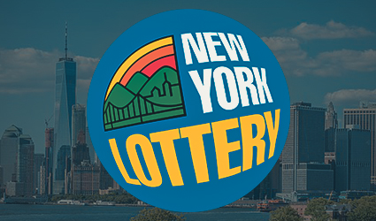New York is an absolutely huge state when it comes to population. You might have heard of a quaint little village called New York City, the most populated city in the entire country (more than double the population of L.A.---it’s true!). However, NYC is not the state’s only city of meaningful size with Syracuse, Albany (the capital) and Buffalo also having some significant populations of their own.
However, New York State Lottery does face some in-state competition for the gambling dollars of the state’s residents. In addition to Commercial Casinos, there are also some Tribal Casinos dotting the state. Bordering states, particularly Pennsylvania and New Jersey, also have commercial casinos of their own to draw New York residents.
In fact, it was for this reason that there was recently a push (and public vote) in the State of New Jersey to expand casinos beyond Atlantic City, but that vote went on to fail. One of the reasons that they wanted casinos in the Northern part of the state is because certain residents of New York who might have once visited Atlantic City no longer do as the state now has its own Commercial Casinos.
At 14th in median resident income, New York is a relatively well-to-do state, although, the costs of living in some parts of the state, especially in NYC itself, can be extremely high and somewhat offset this better-than-average median resident income. Even with that, some residents of the state have enough in the way of discretionary income that it should bode well for lottery revenues.
New York ranks seventh amongst all states for population density, which might come as a surprise given that it is home to the sardine can known as New York City, but that’s partially offset by the fact that New York is also the 27th largest (about average) in land area. Other states that are higher in population density are geographically very small with a few population centers. No state that occupies more real estate than New York has a higher population density.
All of this seems like it should come together to bode reasonably well for the New York State Lottery Department, and population density is very general, anyway. What you really want is to have some serious population centers that would put many residents convenient to lottery retailers, and NYC certainly does that. To see how it all plays out, let’s take a look at the annual report.
The first thing that we find is that traditional lottery games brought in a total of 8.209B for Fiscal Year 2019, when compared to the 4.919B in prizes, we see that the lottery returned, overall, about 59.92% of all monies bet to players and that players lost about 3.29B to the state’s lottery. The estimated population for the State of New York for 2019 was 19.45M, so we see that the average loss, per resident, was about $169.15, which is definitely on the higher end of the spectrum.
The report goes on to break down sales and prizes by game type, so we will now take a look into those and get the returns to player:
|
Game Type |
Sales (Thousands) |
Prizes (Thousands) |
Return to Player |
|
Mega Millions |
480,144 |
232,726 |
48.47% |
|
Lotto |
69,311 |
24,643 |
35.55% |
|
Take 5 |
242,251 |
120,535 |
49.76% |
|
Pick 10 |
30,553 |
13,501 |
44.19% |
|
Numbers |
911,900 |
470,230 |
51.57% |
|
Win 4 |
955,450 |
463,999 |
48.56% |
|
Powerball |
389,777 |
176,520 |
45.29% |
|
Cash for Life |
87,911 |
36,914 |
41.99% |
|
Quick Draw |
814,078 |
538,705 |
66.17% |
|
Instant |
4,226,735 |
2,842,847 |
67.26% |
As we can see, total lottery returns are largely propped up by a high percentage of the lottery sales being instant tickets, which return roughly in line with lottery averages. Drawing tickets, overall, return about 52.19% to players, which is roughly where you would expect those to be. It would be sub-50%, except the Quick Draw game is saving the overall body of players from losing more than half of all monies bet on drawing games.
The average resident loss to the New York State lottery is well above average and that’s because the state is home to so many population centers and, despite the comparatively high cost of living in some parts, plenty of the state’s residents have a few extra bucks to spend on lottery tickets.
Instant ticket returns slightly less to players, on average, compared to some other states...but the overall return to player for the New York State lottery is on the higher end of the spectrum simply because such a large percentage of overall sales come from Instant Tickets and Quick Draw. The returns to player of the other drawing games are about as terrible as one would expect.
They say you can’t put a price on a dream, but for many residents, you can. $2. The cost of a Powerball or Mega Millions ticket.
North Carolina:
The only time you will hear someone say they are, “Going to the casino,” in North Carolina is if they mean Harrah’s Cherokee or if they are going out of state. That aside, the only competition for residents’ gambling dollars come in the form of Charitable Bingo.
While the state lottery might not have much to compete with, North Carolina is not the richest of the states, given that it ranks 40th in terms of median household income. Even with a relatively low cost of living, that’s still not great.
However, many of the residents of the state are concentrated in population centers, given the fact that North Carolina ranks 15th in population density. That puts the state in the top third of states for this metric which generally bodes well for the state lottery.
We would expect traditional lottery to do about average in this state in terms of losses per resident because of the relatively dense population, which means that most residents are going to be relatively convenient to a lottery retailer. Additionally, there’s not much competition from in-state when it comes to other forms of gambling. I guess the best way to find out is by checking out the annual report.
The first thing that we note is that the lottery had a total of 2,859,624,000 in sales against 1,845,287,000 in prizes. This results in an overall return to lottery players of 64.53%, which is better than others in the overall sense and is probably propped up by a positive proportion of instant ticket purchasing.
Alliteration aside, players found themselves losing a total of about 1,014,337,000 to the lottery for 2019, which based on a population estimate of 10.49M comes out to about $96.70 in losses, per resident. This will definitely put North Carolina safely in the top half of lottery losses per resident.
Later on in the report, the lottery will separate Instant and Drawing sales and prizes from one another, so let’s take a quick look at that:
|
Game Type |
Sales |
Prizes |
Return to Player |
|
Instant |
1,908,862,000 |
1,348,383,000 |
70.64% |
|
Drawing |
950,762,000 |
480,698,000 |
50.56% |
As we can see, the loss per resident is a bit better than average, so it seems that the combination of population density and relatively little competition bodes well for the state lottery department. While Drawing Game returns are at about the average of 50%, Instant Games have a slightly better average return to player than you will find in other states and also account for roughly two-thirds of all lottery sales.
Of course, North Carolina should authorize Commercial Casinos in the state. They would do pretty well in the population centers and the Governments of others states have clearly demonstrated that they can get away with some pretty massive revenue taxes on casino win. While it’s true that the traditional lottery would take a bit of a hit, there can be no question that the state government would make much more money overall.
North Dakota:
North Dakota is a state where we would not expect traditional forms of lottery to perform terribly well for a few different reasons. The first of these reasons is that there are many Tribal Casinos for the State Lottery to compete with and those offer games with better return-to-player and are generally considered more fun.
Additionally, Charitable Bingo is fairly common, so the state lottery has that to worry about. Social gambling is also quite popular in the state, with many home poker games to be found. All things considered, residents probably (on average) don’t have any great desire to play the lottery.
Ranking 18th in Median Household Income, North Dakotans are relatively well-to-do, which should help the lottery out at least a little bit. While there are a few exceptions, we find that the states with higher median household incomes tend to spend more on lottery.
The benefits of that will be somewhat offset by the fact that North Dakota is 47th in population density and doesn’t even really have any massive population centers. In fact, Fargo is the only city with a population of more than 100,000 and no other city in the state is even close to that.
Let’s see how all of that works together in the annual report.
The first thing relevant to us is that total ticket sales amounted to 35,352,991 for the year in question against 18,240,852 paid out in prizes for a total return to player of 51.6%, which is putrid, even by state lottery standards.
North Dakotans would lose $17,112,139 to the lottery that year, which based on 2019 population estimates of 762,062, reflects losses of about $22.46/resident. Just as we suspected, North Dakotans are mostly uninterested in playing the lottery, though for many of them who otherwise might, they are not geographically convenient to a lottery retailer.
Ouch. That makes the North Dakota lottery one of the poorest revenue drivers in the country, as far as state lotteries go. I bet most of you readers weren’t expecting it to be quite that bad. Of course, I see it as good, because the lottery is a terrible bet anyway.
Of course, there’s another reason for the poor performance: The North Dakota lottery does not sell any Instant Tickets. None whatsoever. As we see in other states, Instant Tickets often make up as much of 70%+ of a state’s overall lottery sales, sometimes even more, so this is a tremendous revenue source that North Dakota is missing out on. They are relegated to five drawing games, of which two are Mega Millions and Powerball---which are games that many people don’t play unless the top jackpots are absurdly high.
Ohio:
Ohio is going to be an interesting case because, having grown up there, this writer knows that the demographics are not really going to matter too much. For whatever reason, residents of The Buckeye State LOVE the lottery!
Much of it has to do with advertising, believe it or not, the Ohio State Lottery has had a game show (Cash Explosion) based on an instant ticket that has been going on for over thirty years. In addition to the other prizes, such as cash or free additional tickets, Ohio residents can win an entry to be on the weekly game show.
This writer also knows that this lottery advertises all over the place. You’ll never see as much lottery signage surrounding retailers, not to mention the TV ads and highway billboards (yes, really) as you will in the State of Ohio.
It’s honestly fairly ridiculous.
It’s probably not going to matter that the State of Ohio has had Commercial Casinos for over a decade and that most of those are concentrated in the population centers. It probably won’t matter that the state is home to racinos that manage to target other large segments of the populace, people have bit into this lottery hook, line and sinker...and it is an absolute juggernaut.
Of course, what the lottery should do is have Limited Video Lottery Parlors like West Virginia has done. That would enable bars and fraternal locations (and maybe even convenience stores) to have Video Lottery Terminals with slots and video poker...and I absolutely guarantee the revenues created would be borderline ridiculous. Residents of Ohio really, REALLY love gambling, for the most part.
It’s not going to matter that The Buckeye State is 33rd in median annual income, and has large patches of the state that are truly destitute--mostly former steel towns. You also have Dayton, which was kind of like little Detroit for a time in automotive production, but hasn’t done quite so well in recent decades. Nope, there are some residents of the state who are going to buy that chance no matter what their situation.
One thing that does bode well for the Ohio State Lottery is that Ohio is 9th in population density. You wouldn’t think it going East to West on I-70, where it looks like:
Basically Nothing---Nothing---Basically Nothing---Columbus---Absolutely Nothing---Dayton
But, it’s true. Cincinnati, Columbus and Cleveland are all huge, as are Toledo, Akron and Dayton, though to a bit of a lesser extent.
In effect, the vast majority of folks living in the state of Ohio are convenient to a lottery retailer, and a huge percentage of those residents take advantage of that.
To what extent? I want to know too, so let’s check out the annual report.
The first thing that we find is that ticket sales totaled 3,360,764,000, compared to 2,139,841,000 in prizes, so that is an overall return to player of 63.67%, which is better than some lotteries. Better than most, actually. Ohio residents would lose 1,220,923,000 to the lottery for that fiscal year which, based on the estimated population of 11.69M, comes out to losses of about $104.44/resident.
That’s actually not as bad as I thought, but it’s easily in the top tier of states for losses to traditional forms of lottery per resident and is definitely entirely too high.
The Statistical section of this report breaks down the sales and prizes for instant and drawing games separately, so let’s take a look at that:
|
Game Type |
Sales |
Prizes |
Return to Player |
|
Instant |
1,663.0M |
1,157.9M |
69.6% |
|
Drawing |
1,697.7M |
981.9M |
57.8% |
Ohio has one of the best performing lotteries, in terms of loss per resident, in the entire country...despite being one of the poorest states!
That stereotype that we have been discussing about how people seem to think lottery players are mostly destitute people trying to take a shot at a huge jackpot that they will not win, well, Ohio is probably largely responsible for that. Aside from West Virginia, I don’t think there’s another state with so many gamblers who cannot actually afford to gamble, sorry, Ohio.
Also, Ohio is one of the ONLY states for which Drawing tickets outperform Instant Tickets in revenue, like I said, the resident are going for those huge PowerBall and Mega Millions jackpots.
They say there’s a little truth to every stereotype, well, here it is.
Oklahoma:
Oklahoma is a state that we wouldn’t expect to have a very robust lottery, in terms of average loss per resident. For one thing, the state is home to an almost uncountable number of Tribal Casinos that draw visitors not only from within the state, but also elsewhere. These Tribal Casinos often offer table games, as well as Class III slot machines, so the State Lottery has a lot to compete with.
It should also be mentioned that the largest casino in the world, by square footage of gambling floor, WinStar, is in the State of Oklahoma. I bet some of you wouldn’t have guessed that, probably figured it would be one of the Vegas ones.
Oklahoma ranks 43rd for median household income, which makes the residents of the state often fairly poor, so not all of them are going to have extra money just sitting around waiting to be used for gambling. We have found that states with low median household income tend not to perform well in terms of traditional lottery revenues.
Coming in at 35th in population density, Oklahomans also find themselves quite spread out, so that means many residents of the state are not necessarily going to be convenient to lottery retailers. For all of these reasons, we expect that this state lottery does not make a killing on a per resident basis, but the only way to know for sure is to look at the annual report.
The first thing that we note is that revenues from games were 241,693,417 and total prizes were 141,324,235 which results in an overall return to player of 58.47%. Residents and visitors would lose $100,369,182 to the lottery for Fiscal Year 2019, which based on an estimated population of 643,692 for the year, amounts to $155.93/resident.
Later on in the report we see the numbers for Instant Tickets separated from those of Drawing tickets, so let’s have a look at that:
|
Game Type |
Sales |
Prizes |
Return to Player |
|
Instant Tickets |
135,965,126 |
93,202,993 |
68.55% |
|
Drawing Games |
105,728,291 |
53,040,016 |
50.17% |
What the hell? Well, as we said before...our three key comparative metrics are generally predictive, but not always. Apparently, many of the state’s residents really love playing the lottery, so they must be doing a really bang up job in marketing. These truly baffling numbers make Oklahoma one of the best performing traditional lotteries in the entire country when it comes to loss per resident.
Oregon:
The Oregon State Lottery has a ton of competition for gambling bucks, because it is not hard to gamble in this state. For one thing, there is a Limited Video Lottery by which many small locations are permitted to operate a handful of VLT terminals, similar to states such as Illinois and West Virginia.
Additionally, the state is home to quite a few Tribal Casinos, so it’s certainly true that some residents that might otherwise be inclined to play the lottery would rather take that extra money and spend it in the casinos instead.
Oregon is also very liberal when it comes to Charitable Gambling, Monte Carlo nights, Bingo, Raffles and Pull Tabs are all allowed and are regulated only loosely.
Oregon is also home to any number of card rooms, which are permitted to offer a handful of Table Games as well as poker rooms. Some of these locations can be found in bars and bowling alleys, if you would believe that!
In short, the Oregon State Lottery has a lot to compete with, but maybe they will get some help from our other two key metrics.
Monetarily, the state does okay, ranking 19th in median household income. This slightly above average performance will at least not be detrimental to the state lottery’s fortunes. Oregon might even improve in this regard in future years as it is increasingly becoming more of a mini-hub for tech jobs.
Of course, the population of the state tends to be slightly younger than some others, and we have found that it is those who are roughly middle-aged to be most likely to play the lottery. Oregon is 39th in population density, which normally wouldn’t bode well for lottery fortunes, but that’s mainly because all of the population is concentrated along the coast and the western side of the state is empty.
Many folks would actually prefer if Oregon could be separated into two states, believe it or not.
Overall, the metrics don’t look good for traditional lottery revenues, but Oklahoma was a HUGE surprise, so I guess we’d better check here.
The first thing that we will note is that we are only looking at traditional lottery for these purposes. The first page relevant to us lists the sales separately by general game types, but not prizes. Either way, sales totaled $380,051,099 of which $239,044,444 was returned in prizes. This results in an overall return to player of 62.9%, which is on the high end of average.
Oregon residents and visitors would lose $141,006,655 to the state for this Fiscal Year, so based on a population estimate of 4.218M for 2019, residents lost an average of $33.43.
No major surprises here, we’re afraid. We would expect that the average resident of the state not lose a ton to the traditional forms of lottery (at least, not compared to other states) and the average resident doesn’t. Oregon, as you can see in the chart at the bottom of the page, has one of the lowest losses to state lottery, per resident, in the entire country.
It also has one of the better average returns-to-player, which is almost always because of a high percentage of sales being Instant Tickets. We expect that is also the case here. Bunch of high-end stocking stuffers that are almost always worth less than 75% of face value...just get your friends and family members a store gift card!
Pennsylvania:
Pennsylvania seems like it would be pretty huge, and it is, looking at it East-to-West, but it actually only ranks in the 30’s in land area.
Pennsylvania has legalized and regulated commercial casinos since the turn of the century, but those tend to be really spread out. Philadelphia, as its population would dictate, has a comparatively large concentration of these and there are also two in what one might call the, “Pittsburgh area.” Aside from that, they are mostly spread out, though near, other population centers.
Speaking of population centers, Pennsylvania is one of the more densely-populated states, ranking 9th, which usually bodes well for lottery revenues. Quite simply, the vast majority of Pennsylvanians are convenient to lottery retailers and those in the bigger cities pass several of them every single day of their lives.
Therefore, lottery retailers are almost always readily available, but not always casinos. While there are Charitable Gaming operations in the state, those are mostly relegated to Bingo, Raffles and Pull Tabs and, for whatever reason, don’t seem to be quite as popular as they are in other states...particularly neighboring West Virginia.
Pennasylvanians, on average, are also reasonably well-to-do, coming in at 21st when it comes to median household income. Of course, the state is also kind of on the higher end of effective total tax rates, so residents don’t always have a ton of extra money to spend. Still, when we combine that with the availability of lottery retailers to most residents, we would expect traditional lottery to do well here.
Only one way to know for sure, and that’s to take a look at the annual report.
The report doesn’t say much, but it does say that traditional lottery sales totaled 4,503,328,678 for the year of 2019 with a total of 2,927,074,532 in prize liabilities, which comes out to an overall 65.00% return-to-player. Residents and visitors would lose $1,576,254,146 to the state lottery during that physical year, so based on an estimated population of 12.8 million, the average resident lost $123.14 to this lottery.
The key metrics were certainly in Pennsylvania’s favor, on average, but this is still much more over the national average than we would have expected. They even outperformed Ohio, but that’s mostly because the average Ohio resident is a good measure poorer.
The overall return to player compares favorably to other state lotteries, which we would expect is due to a large share of instant ticket sales as compared to those of much worse-returning drawing tickets. We also know that the PA Lottery advertises incessantly on television, social media, store signage, billboards and basically wherever else they can.
One thing that the lottery ought do is adopt the parlor model that bordering West Virginia has that would enable the bars and other locations in the state to get Limited Video Lottery Terminals. West Virginia is one of the leading states in overall lottery revenue for that reason, and also, many locations within The Keystone State have put in unregulated skill games. There’s definitely a market for convenience gambling in this state---a huge one---the state just has to decide to serve it and the revenues will be massive.
Rhode Island:
Rhode Island is the smallest, by far, of all of the states in land area. Basically, Rhode Island has the land size of about five Columbus, Ohios if you have ever been there.
Rhode Island is also pretty open to gambling. In addition to the fact that there are a couple of state legalized and regulated Commercial Casinos, Charitable Gambling in the forms of Bingo and Pull Tabs are also fairly common to find.
Rhode Island ranks 17th for Median Household Income, which puts in almost in the top third of states in this regard. That means that your average resident tends to have a few extra bucks in discretionary money that can be spent on traditional lottery.
Rhode Island is also second in population density, but that’s primarily because it doesn’t take a lot of people to fill a Rhode Island. Still, a strong population density tends to bode well for traditional forms of lottery, so we will have to see if that holds here.
The relevant games for this page are Instant Tickets which resulted in 102,914,666 in revenues as well as drawing tickets which were good for 160,361,098. This results in a total of $263,275,764 in traditional lottery revenues.
Casinos in the state also operate by way of the lottery, so there are video lottery and table games revenue sharing to be considered, but those things are of no concern to this report.
The report later states that total prize awards were 61.42% return to player for traditional lottery, which means that players received $161,703,974.2 in overall prizes. That being the case, players lost a total of $101,571,789 to the lottery, which based on a population estimate of 1.059M for 2019, comes out to about $95.91 per resident.
Later on in the report, we find that Instant Ticket prizes were 71,047,693, which means that Instant Tickets had a return to player of 69.04%.
Drawing games returned 94,219,635 in prizes, so 58.75% was the overall return to player of drawing games.
All told, Instant Tickets returned slightly below average and Drawing Tickets returned slightly above the average. Keno was the revenue leader for drawing games, and that’s going to have a better than normal return, in fact, we know it returned 65.58% and accounted for nearly half of all drawing sales, so that helped to pull the average up.
As we can see, despite the small land size, the other metrics in the state come together to essentially do what they figured they might, which is result in strong loss per resident to the Rhode Island State Lottery. Overall returns are maybe a hair over average, despite the fact that Drawing Ticket sales beat those of Instant Tickets. As it turns out, the in-state drawing ticket games for Rhode Island tend to return more to player, on average, than those of other states. Instant Ticket returns to player are right about the national average.
South Carolina:
One would think that South Carolina hates gambling, at least, the politicians certainly seem to. Charitable Gaming such as Bingo and Raffles are permitted, but the regulations are tighter here than they are in most other states. Personally, not expanding gambling seems like a missed opportunity, to me, considering that the state does really well in tourism.
South Carolina is one of only a few states that are not home to Commercial Casinos nor Tribal Casinos. While the state is home to Federally-recognized tribes, maybe they just believe that the state would make things as difficult as possible for them and wouldn’t authorize anything beyond what Federal regulations demand. It’s tough to compete if they won’t let you have anything good.
Despite otherwise being gambling-averse, South Carolina does have a state lottery. If it does well at all, one of the reasons why is because there is little in the way of in-state competition for the gambling dollars of residents.
Ranking 42nd in median household income, South Carolina is one of the generally poorer states in the country. While this typically would be a bad sign for traditional lottery, it might help that the lottery doesn’t really have to compete with anything.
The state might also be aided by the 19th ranking when it comes to population density. That means that the state has some population centers, enough to make it better than average in this regard, and as such, puts more denizens conveniently located to a lottery retailer.
Let’s check out the report here:
|
Game Type |
Sales |
Prizes |
Return to Player |
|
Instant |
1.4504B |
1.0586B |
72.99% |
|
Drawing |
530.5M |
253.5M |
47.79% |
It would appear that the Instant Games return better than average whilst the drawing games return significantly less than average. It’s a pretty safe guess that the multi-state lottery games make up a sizable percentage of the drawing ticket sales.
Overall, residents of the state would lose about 668.8M to the lottery for Fiscal Year 2019, so based on an estimated population of 5.149M for that time, the average loss per resident was about $129.89.
We’re not surprised that the numbers are higher than average, but we are a bit surprised that they are that MUCH higher than average considering the relatively poor median household income numbers. Of course, South Carolina does get a lot of out of state visitors, so maybe some of the money pouring into the state lottery is coming from them.
We also note that, on average, South Carolina has some of the best returning Instant Tickets in the entire country, so maybe---just maybe---if you don’t screw people over so hard they are more inclined to gamble with you. That said, these are still terrible compared to other forms of gambling.
South Dakota:
South Dakota is a relatively isolated population surrounded by states that also have relatively isolated populations. Additionally, this state is home to both Commercial Casinos (Deadwood) as well as some Tribal Casinos, so the state lottery is getting some competition from those.
Additionally, Charitable Bingo Games are also fairly common.
How isolated is the average South Dakotan? They rank 46th in population density, if that tells you anything. What that’s going to mean is that many of the state’s residents aren’t terribly convenient to lottery retailers, and we have found that tends to have a negative impact on traditional lottery revenues.
South Dakota also ranks 32nd in median household income, so while that’s not quite in the bottom third, it still puts the state safely below average.
We expect that these things will combine to create a state lottery whose revenues and losses per resident are below average, but we must check the annual report to be able to say for sure.
|
Game Type |
Sales |
Prizes |
Return to Player |
|
Instant Tickets |
32,237,932 |
21,321,309 |
66.14% |
|
Drawing Games |
30,708,432 |
16,383,207 |
53.35% |
Residents lost a total of $25,241,848 to the lottery for that Fiscal Year, which based on an estimated population of 884,659, yields an average loss per resident of $28.53. It looks like North Dakota’s standing as the least average loss per resident of states with a lottery is still safe, for now, but we’ll have to see if Wyoming has something to say about it.
This is one of the lowest performing lotteries in the entire country. In addition to the poor indicators that we cited above, it probably doesn’t help that the returns to player are not terribly good, even by state lottery standards. That’s particularly true when it comes to Instant Tickets, players losing one out of every three dollars bet is absolutely abysmal for those.
While we would normally cite a slightly better than average return on drawing games, quite frankly, the sample size is so small that the whole thing could swing just on one second-top prize more than, “Expected,” being won.
Tennessee:
Tennessee is another state that could benefit from an expansion of gambling offerings, even though they probably won’t be doing that anytime soon. The state is home to cities such as Nashville and Knoxville that are a lot cooler than you might expect and have more culture than you would guess. These cities trend a little younger than the state, on average and are really just fun places to be that could draw probably more tourists if you’d throw a casino in there somewhere.
How bad is the gambling here? There aren’t even any active horse racing tracks. Simulcast is legal, but without tracks, it’s tough to find.
Tennessee ranks 41st in median household income, which makes it one of the poorer states, safely in the bottom third. However, we have found that a state being relatively poor is not necessarily a death sentence when it comes to state lotteries that don’t have other gambling competition within the state’s borders.
Consisting of big cities and nothing, Tennessee ranks 20th in population density, which is better than average...and also has large segments of the population more concentrated than many other states do, so that should help matters a bit. Let’s get into some numbers provided by the state’s annual lottery report.
Instant: 1,448,878,000
Drawing: 363,726,000
Total: 1,812,604,000
At this point, the lottery separates out the value of Instant tickets that are provided promotionally, or as prizes, but I’m not going to do that. The first reason why is that there is no guarantee they will actually get redeemed, and this paragraph is the second reason why:
Instant games prize expense is managed through the number of tickets printed for each game and the value of prizes as determined prior to ticket production. Prize expense is recorded based on an established prize structure and a related percentage of sales for each game introduced and is recognized when products are made available for sale to the public.
The aggregated prize payout for all instant games was 67.6%, 67.6%, and 67.4% of instant game sales, net of free tickets, for 2019, 2018, and 2017, respectively. Gross prize expense for drawing-style games generally increases or decreases in direct proportion to ticket sales of the related game and is recorded at the time of the related draw. The aggregated prize payout for all drawing-style games was 51.1%, 51.1%, and 50.5% for 2019, 2018, and 2017, respectively.
So, we’re just going to use their percentages instead. Based on this, instant games had an expected return of 979,441,528 and drawing games an expected return of 185,863,986.
Therefore, we find that lottery players were expected to lose:
(1,448,878,000+363,726,000 )-( 979,441,528+185,863,986) = 647,298,486, so based on an estimated population of 6.829M for the year 2019, we see an expected loss of $94.79/resident.
The combination of the population being concentrated in big cities and the fact that there isn’t much in the way of other ways to gamble wins out for the Tennessee State Lottery. Another factor is that one of the border states is Kentucky, which itself does not have any casinos. Furthermore, even those bordering states that do have casinos aren’t situated such that those are necessarily terribly convenient for residents of Tennessee.
Thus, if you live in Tennessee and want to gamble, unfortunately, you probably do it by playing the lottery.
Texas:
Texas is an absolute joke when it comes to gambling---and not a good joke.
I’m sorry, but I’m going to let Texas have it here: You say, “Everything is bigger in Texas,” but you kill virtually any form of legislation that would authorize or expand new forms of gambling.
The most popular poker game in this country, and most likely to be found in land casinos, “Texas Hold ‘Em,” is literally named after the state, but the state has no legal poker rooms whatsoever.
The state claims to pride itself on its independence, in fact, it’s the only state not on the national power grid, but despite that, it’s a state that won’t let its residents gamble if they want to. Texas is one of the only states to also oppose its tribal gambling entities to whatever extent it can and at every possible turn, despite the fact that they are not convenient to the vast majority of the state’s residents anyway AND are extremely small operations.
You claim to value freedom, and yet, you restrict gambling to one of the greatest extents possible and are one of the least liberal states when it comes to gambling. South Carolina is less restrictive than you are.
Of course, Texas actually IS home to one form of gambling that you won’t find in most other states--greyhound racing. In a few short years, it will be just them and West Virginia, but one difference with West Virginia is that state has virtually any for of gambling that you could ever think of.
One way of putting it is that Texas is NOT fine with Texas Hold ‘Em and has a state Government that doesn’t want residents to have the option of playing slot machines or Blackjack if they want to, but torturing dogs is perfectly fine and is an institution that should be upheld.
In short, Texas is an absolute joke and is one state that I will absolutely never visit for any reason, or if I do, it will be because I have a connecting flight there. In any event, I won’t be leaving the airport. Your state flat out sucks, sorry. Oh, and Kansas City has better BBQ than you do, in case I forgot to mention that. I hope the Cowboys never win another Super Bowl.
24th in Median Resident Income and with a State Lottery that has little in the way of in-state gambling competition, we would expect the Texas Lottery to do quite well. It’s not as if residents of the state have very many alternatives when it comes to gambling options. Both of these things, in our studies, we have found bode relatively well for state lotteries.
Despite its size, Texas is 26th in population density. That’s saying something considering that Texas ranks #2 for total land area, the state mostly consists of huge cities that are surrounded by absolutely nothing, and a whole lot of it.
Also, why did Texas even notice what these extremely small tribal casino operations are doing? The state government should have better things to do than that.
Well, let’s look at the lottery report, I guess.
It appears that Instant ‘Scratch’ Tickets’ sales were 4.8456B and Drawing Ticket sales came out to about 1.4059B. This results in total sales of 6.2515B for the Texas Lottery. Of course, Texas is massively populated, so this might not be a complete disaster on a loss/resident basis.
Anyway, what we end up with is a total return to player of roughly 66.10%, which is undoubtedly bolstered by the fact that over 75% of the sales are on higher returning (compared to drawings) instant tickets. According to the Lottery Report, the $10 price point for scratch off tickets is apparently doing pretty well. Not that lottery players generally care, but your expected loss on those is probably somewhere in the range of $2.50-$3.50.
Returns as poor as those offered by the Texas Lottery, in almost any other legal gambling context, would be totally illegal, so there’s that.
Players would lose 2.1195B to the Texas Lottery for Fiscal Year 2019, so based on an estimated population of 29M, we arrive at an average loss per resident of $73.09. It wasn’t quite the bloodbath I thought that it would be; these numbers are fairly middle of the road.
Okay, so the Instant Tickets return well compared to other lotteries and the loss per resident is a very small fraction over average.
Have you ever thought about spending a C-Note on an Instant Ticket? You might get the chance soon:
$100 – Premium Price Point Scratch Ticket Game
The $20 and $50 price point games have seen significant sales growth in recent years. From FY 2015 to FY 2019, sales at the $20 price point have increased 48.6% while sales at the $50 price point have increased 131.8%. At the end of FY 2019, the $20 and $50 price points were the third and fourth bestselling price points respectively. With the demand for games at higher price points increasing, the Texas Lottery is starting to consider all available options for the development of a $100 scratch ticket game. A game at this price point would require a unique prize structure to differentiate it from games at the $20, $30 and $50 levels. It would also require a ticket design that would allow it to be marketed as a premium product. In addition, the distribution and pack size for a $100 scratch ticket game must be evaluated to ensure optimal acceptance and placement at Texas Lottery retail locations.
You can’t bet $0.40 on a slot machine, but yeehaw, those $100 Instant Tickets might be right around the corner, y’all. What a joke.
There’s probably plenty to love about Texas, but it isn’t that.
Utah:
Haha. Keep dreaming. If you’re in Utah and you want to gamble, my advice is move.
I’m not going to say that Utah is the worst state in the country to live, but…
No, I am going to say that. Utah is terrible, unless you’re a Mormon.
Vermont:
Vermont isn’t a state that’s big on gambling, though you will find some Charitable Bingo, Raffles and Pull Tabs.
Vermont is honestly something of an enigma. It’s a very politically liberal state that tends to be very Libertarian in philosophy. Mostly, just let people do what they want to do and try not to worry too much.
Another interesting thing about this state is that it’s the second least religious of the fifty, but you wouldn’t think that based on how residents interact with one another. The state is very much about being conscientious and courteous. The concept of community events and organizing, as well as that of neighbors helping neighbors is huge here.
Anyway, while there aren’t any casinos...I’ve got my ten-fifteen year plan going, and it includes moving to Vermont at the end of that time. I’m firmly convinced there’s not a better state to live in, so I hope you guys are ready for another, “Flatlander,” to come your way. I can take trips out-of-state to stay up on the latest in gambling, so don’t worry, the sites won’t be losing me as long as they still want me.
Oh, right, the lottery.
At 22nd, Vermont does relatively well in median resident income and is also the oldest state, on average, which means that there is plenty of, “Old money,” (no pun intended) up there. The state’s relative wealth and lack of in-state gambling competition (as there are no commercial casinos) would usually bode well for state lotteries.
At 31st, the state is below average in population density. In fact, the most densely populated parts of the state are those that some other states would consider mid-sized cities, at best. The State capital of Montpelier, believe it or not, is home to fewer than 10,000 residents.
Lottery and Liquor are handled by the same bureau.
The Bureau of Drinkin’ and Gamblin’ reports:
Total ticket sales were $139,268,837 and total prizes came out to $90,892,067, which represents a return to player of 65.26%. In total, lottery players lost something in the neighborhood of $48,376,770, which based on an estimated population of 623,989 for the year, comes out to about $77.53/resident.
Overall lottery returns are better than average, which I would expect is due to a high percentage of sales being in the form of Instant Tickets, which tend to have better returns to player than do drawing games. You’ll also not see any highway billboards advertising Mega Millions and PowerBall jackpots because, not only are there not many highways, but billboards are completely illegal in the state.
Residents with a few extra bucks play a bit of lottery and Instant Tickets are common stocking stuffers around Christmastime. This all contributes to an average loss per resident that is slightly higher than the national average, though not by much.
Virginia:
The Virginia State Lottery once didn’t have much in the way of competition for the gambling dollars of residents, but it has been increasing recently and is about to massively increase.
Virginia Games of Skill were not specifically illegal for some recent years, though they were made illegal and a phase out is now in progress. That’s probably to make way for the Commercial Casinos that have been authorized by voters, as of November 2020, that will soon be opening in the state. The state is also expected to be home to at least one Tribal Casino...due to the fact that Commercial Casinos are now legal anywhere in the state, the state must allow the Federally-recognized tribes to do the same.
Additionally, the state has long had charitable gaming in the forms of Bingo and Raffles, so the lottery has basically always had that to compete with.
Ranking tenth in median household income, Virginians are fairly well to do, rounding out the Top 20% of this country, which usually bodes well for traditional lottery. The state also has the 14th highest population density, another metric that is usually good for State Lotteries as it puts residents near a lottery retailer.
In any event, the casinos aren’t there yet and will only be in a few cities, so the Virginia Lottery didn’t have a ton to compete with in 2019.
The bare bones are 2.293B in lottery sales against 1.402B in prizes for FY2019, which reflects an overall return of 61.14% and losses of about 891M for the players. The population of the state was estimated to be about 8.536 million for that year, so the average resident of Virginia lost about $104.38 to the lottery.
It’s hard to say whether or not this will drop off a bit when the casinos open, but we expect not too much, because more residents will be convenient to a lottery retailer as compared to a casino. Not only that, but any declines to casinos will be offset by the fact that the more widely spread skill games will be gone by then.
Washington:
Washington has widely spread card rooms with some Table Games and poker, so it’s pretty similar to Oregon in that regard. As a result, the Native American casinos within the state are also permitted to have Table Games and are home to Class II gambling machines that are regulated by compact and, as far as players are concerned, aren’t meaningfully different from slot machines that they would find in Commercial Casinos elsewhere.
Washington ranks 9th in Median Household Income, which makes it a fairly well-to-do state, but again, there is some competition for gambling dollars. Another thing that might not help the traditional lottery fortunes is the fact that Washington also generally trends younger and educated, so those are two demographics that don’t play the lottery as frequently as the well-to-do working class folks.
Washington is right in the middle, at 25th, when it comes to population density.
We would expect Washington to do well on average loss per resident for traditional lottery, but it turns out that it’s an outlier:
|
Game Type |
Sales |
Prizes |
Return to Player |
|
Instant, “Scratch” Tickets |
523.8M |
355.5M |
67.87% |
|
Drawing Tickets |
279.4M |
134.8M |
48.25% |
In total, players would lose 312.9M to the Washington State Lottery for FY2019, which based on an estimated population of 7.615M, reflects a loss of $41.09/resident. It seems that Washingtonians are mostly uninterested in playing the lottery, although, instant ticket sales seem to be going up every year, yes, even in 2020!
Both types of lottery games return less than average, but since such a high percentage of lottery sales come in the form of instant tickets, overall lottery returns to player are roughly average. At least they know enough to stay away from drawing games!
West Virginia:
West Virginia State Lottery has absolutely MASSIVE revenues compared to most other state lotteries, on a per resident basis, but that’s because casino operations are regulated through them as well as their Limited Video Lottery operations.
West Virginia Limited Video Lottery enables small locations, such as bars, restaurants, parlors built specifically for the purpose, laundromats, convenience stores (and probably others) to have as many as seven machines called, “Video Lottery Terminals.” The vast majority of these machines are combinations of slot and video keno games, though some of them have Video Poker, as well. Manufacturers include IGT (Game King), Bally and Spielo.
Additionally, fraternal organizations are permitted to have as many as ten machines, provided that they are operating on a non-profit basis.
West Virginia is home to five land casinos that are kind of scattered about. Four of these casinos were authorized to have video lottery terminals in the 90’s in order to generate revenues, otherwise they would have closed. Prior to that, two of them were horse racing tracks whilst the other two were, unfortunately, greyhound racing tracks.
The state will not get rid of greyhound racing, even though the casinos have to artificially prop up both the operations and the racing purses (as they would not be anywhere near financially viable otherwise---greyhound racing loses A TON of money) because the greyhound breeders...most of whom are in Florida, have their hands deep in the pockets of certain state legislators. If you visit the greyhound tracks on a racing day, you’ll find that almost nobody is watching the races because nobody cares. Most of the people in there are probably there to simulcast bet on horse racing.
The fifth casino in the state is a resort casino known as the Greenbriar which is considered a, “Historic Resort,” for which casino gambling was authorized to save it from what would have probably been an inevitable closure. The property is also owned by the company formerly headed (and likely to be headed again) by current Governor, Jim Justice.
In terms of median household income, West Virginia ranks dead last, but they sure do love to gamble. Don’t worry, most residents of the state aren’t starving to death, despite the low income numbers---the cost of living in the state is extremely low. Also, food stamps.
Despite being often thought of as a backwoods sparsely populated state, West Virginia actually ranks 29th in population density. While there aren’t any cities that most people would consider huge, the state doesn’t occupy a ton of real estate, in general.
Let’s look at the report:
One of the first pages relevant to us has the information we need:
|
Game Type |
Sales |
Prizes |
Return to Player |
|
Instant Tickets |
115,596,000 |
77,337,000 |
66.9% |
|
Drawing Tickets |
84,501,000 |
41,909,000 |
49.6% |
In total, West Virginians and visitors lost $80,851,000 to the traditional forms of the West Virginia lottery which, based on an estimated population of 1.792M, results in a loss per resident of $45.12.
When it comes to traditional lottery, this is much higher than we would have expected, despite being well below national average. As we mentioned before, revenues for the state VLT’s are CRAZY high, so it’s a surprise that there’s even any discretionary gambling income in the state left to play traditional lottery games!
Wisconsin:
Wisconsin is home to a wide variety of Tribal Casinos with the full gamut of gambling offerings. Additionally, Bingo and Raffles are quite common and tend to be popular community events. With that, the lottery faces a little bit of competition for the Wisconsin gambling dollar.
Reasonably well-to-do, the state ranks 23rd for Median Household Income, so that at least doesn’t hurt the fortunes of the traditional lottery when it comes to revenue per resident. Wisconsin is also ranked 24th for population density..it sure does love being average!
We’re not making fun...when it comes to being nice, Wisconsin is WAY above average. Some of the nicest folks in the country live there, so if you like people behaving politely, you’ll love visiting Wisconsin. Hell, you might even move there.
Just don’t wear anything Chicago Bears related and you’ll be fine.
The first thing that we note is 451.3M in Instant Ticket Sales took place and another 261.8M in Drawing, ‘Lotto,’ Games for a total of 713.1M. The section after that indicates that a total of 431.9M in prizes were paid out, thereby making the return to player 60.57% overall.
Wisconsinites(?) would lose a total of 281.2M to traditional forms of lottery for 2019, so based on an estimated population of 5.822M for the year, we put the lottery losses at about $48.30/resident.
|
Game Type |
Sales |
Prizes |
Return to Player |
|
Instant Tickets |
451.3M |
300.5M |
66.59% |
|
Drawing Tickets |
261.8M |
131.4M |
50.19% |
The lottery has a below average return to player, mostly due to the fact that the Instant Tickets are pretty bad compared to other lotteries. It would seem that the residents know better than to play them, given that the lottery losses per resident are well-under the national average.
Of course, Wisconsiners spend a good deal of the year snowed in completely, at least, some of them. That probably doesn’t help the lottery’s fortunes.
Wyoming:
Wyoming is a very unique state in that any form of social gambling is perfectly legal! If you want to get a slot machine for your friends to play, as long as you can get the expected return to 100%, have a blast! Home Craps Table, why the hell not? Just make sure everyone is betting the same amount and take turns banking the game!
Because of this, the Tribal Casinos in Wyoming are permitted to offer any Class III gaming they wish. That is the real reason why; it went through court and everything! The state presumed that this would only be the case if the state had these forms of gambling on a commercial basis, but as it turns out, the state was wrong. Just Google, “Northern Arapaho v. State of Wyoming,” and you’ll see.
We don’t expect this lottery to have a huge loss per resident as one key metric is population density...had Alaska not become a state, Wyoming would be dead last. The state is 20th in median household income, but that’s not going to matter. The better part of the state’s residents are not particularly close to a lottery retailer, so they wouldn’t be able to conveniently play even if they wanted to---and most of them probably don’t.
For the time being, lottery revenues in the form of sales totaled $36,859,625.10 against $19,799,250.02 paid out in prizes for a return to player of 53.72% overall, which is probably because all (except raffle) are drawing games.
Players would lose a total of precisely $17,060,375.08 to the lottery for Fiscal Year 2019, which based on a population estimate of 578,759 residents, reflects a loss of $29.48/resident.
It also doesn’t help that the state does not have Instant Tickets of any kind.
For the chart below, Delaware is the only state that includes numbers outside of traditional lottery, Instant Keno, Raffles or Pull tabs.
|
State |
Loss Per Resident |
|
Alabama |
N/A |
|
Alaska |
N/A |
|
Arizona |
$50.85 |
|
Arkansas |
$54.88 |
|
California |
$67.64 |
|
Colorado |
$45.64 |
|
Connecticut |
$131.10 |
|
Delaware |
$86.70 (1) $113.56 (2) $552.86 (3) |
|
Florida |
$116.98 |
|
Georgia |
$250.09 |
|
Hawaii |
N/A |
|
Idaho |
$53.34 (4) |
|
Illinois |
$84.25 |
|
Indiana |
$72.45 |
|
Iowa |
$47.66 |
|
Kansas |
$42.09 |
|
Kentucky |
$68.08 |
|
Louisiana |
$51.33 |
|
Maine |
$75.54 |
|
Maryland |
$138.11 |
|
Massachusetts |
$220.70 |
|
Michigan |
$153.47 (5) |
|
Minnesota |
$42.77 |
|
Mississippi |
Unknown (6) |
|
Missouri |
$73.48 |
|
Montana |
$24.10 |
|
Nebraska |
$40.76 |
|
Nevada |
N/A |
|
New Hampshire |
$102.24 |
|
New Jersey |
$157.06 |
|
New Mexico |
$31.76 |
|
New York |
$169.15 |
|
North Carolina |
$96.70 |
|
North Dakota |
$22.46 |
|
Ohio |
$104.44 |
|
Oklahoma |
$155.93 |
|
Oregon |
$33.43 |
|
Pennsylvania |
$123.14 |
|
Rhode Island |
$95.91 |
|
South Carolina |
$129.89 |
|
South Dakota |
$28.53 |
|
Tennessee |
$94.79 |
|
Texas |
$73.09 |
|
Utah |
N/A |
|
Vermont |
$77.53 |
|
Virginia |
$104.38 |
|
Washington |
$41.09 |
|
West Virginia |
$45.12 |
|
Wisconsin |
$48.30 |
|
Wyoming |
$29.48 |
(1) The Delaware Lottery is actually engaged in virtually all forms of gambling within the state, of which there are many, including Commercial Casinos. Delaware is also home to something called a Sports Lottery, which itself is fairly unique to the state. For that reason, this number includes only traditional lottery with other forms of lottery being included in the number below this in the table.
(2) This number represents losses to the lottery, per resident, in Delaware that excludes all video lottery terminal and table games revenues, but includes the Delaware Sports Lottery.
(3) This is the Delaware Lottery Revenue from all sources. Delaware is a unique state in that, rather than having a separate Division of Gaming, or equivalent, all Gaming activities are managed through the lottery, including casino gambling.
(4) This loss per resident in the State of Idaho includes pull tabs, lottery-conducted raffles and TouchTabs as well as more traditional lottery products. TouchTabs actually helped out the state a lot, otherwise, they would definitely be towards the bottom in lottery loss, per resident.
(5) The loss per resident for the State of Michigan includes prizes that have not been claimed, so if they were to be claimed, then the loss per resident would have been a bit less. State lotteries usually just consider this a liability, so these might be expired tickets, or something. Most lotteries don’t specifically list this item in the main report at all, so I will admit I didn’t really know what I should do with it for the purposes of this chart.
(6) This lottery is relatively new and comprehensive full-year data was not available in a single report at the time of this study.